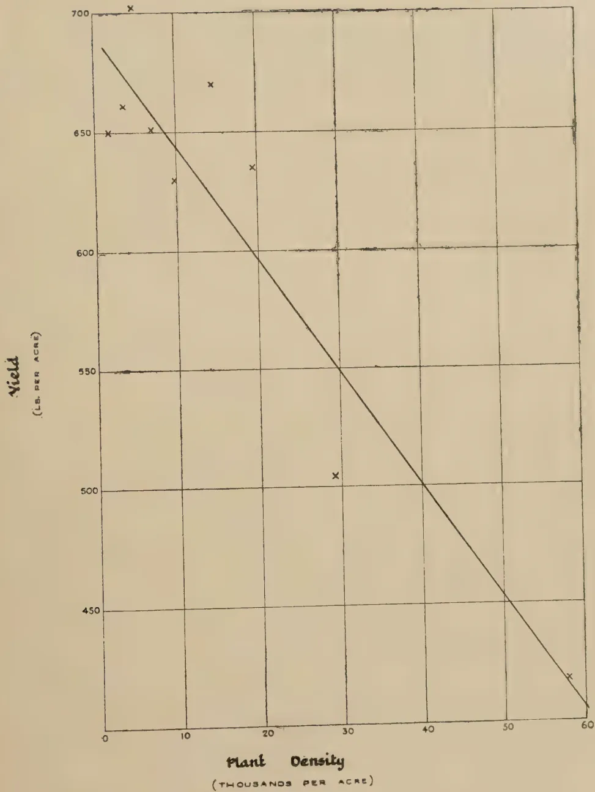

VOL. XCIX.
PERADENIYA, JANUARY-MARCH, 1943.
No. 1.
| Page | |
|---|---|
| Editorial .. .. . | 1 |
| The Influence of Manuring, Spacing of Hills and Seedling Number per Hill on the Yield of Castor. By M. Fernando, Ph.D., B.Sc. (Lond.), D.I.C. .. .. . | 3 |
| The Analysis of Ceylon Foodstuffs—XI. By A. W. R. Joachim, Ph.D., Dip. Agric. (Cantab.), and D. G. Pandittesekere, Dip. Agric. (Poona) .. .. . | 13 |
| The Nitrogen Content of Ceylon Rain. By D. E. V. Koch, B.Sc. (Hons.), Ph.D. (Lond.), F.I.C., D.I.C., F.R.H.S. .. .. . | 18 |
| Rinderpest .. .. . | 20 |
| The Preparation of Jams, Preserves, Candied Fruit and Cordials .. .. . | 27 |
| Movable Poultry Houses .. .. . | 37 |
| Good Seed Potatoes and How to Produce them .. .. . | 39 |
| Drainage as a Conservation Practice .. .. . | 45 |
| The Old Order Changeth .. .. . | 49 |
| Minutes of a Meeting of the Board of the Tea Research Institute held on October 6, 1942 .. .. . | 51 |
| Minutes of a Meeting of the Board of the Tea Research Institute held on December 18, 1942 .. .. . | 54 |
| Minutes of the 64th Meeting of the Rubber Research Board held on January 25, 1943. .. .. . | 58 |
| Animal Disease Return for the Month ended March, 1943 .. .. . | 61 |
| Meteorological Reports for January to March, 1943 .. .. . | 62-64 |
1—J. N. A 24586 (5/43)
[Faint page: no legible print of its own could be verified; text withheld (stage 4 review list)]
JANUARY TO MARCH, 1943
THE DESI-PLOUGH: WILL IT STAGE A
COME BACK?
THE short editorial note under the heading "The Old Order Changeth" which we reproduce from the April (1942) number of Agricultural Engineering, the Journal of the American Society of Agricultural Engineers, is bound to provoke the question: of what immediate practical interest are the agricultural practices discussed in it to Ceylon? The semi-aquatic conditions of the paddy field do not lend themselves to the stubble mulch, while outside the Jaffna Peninsula there is not one acre of land under dry farming involving the use of the plough, other than the small experimental areas managed by the Department of Agriculture. Mulch farming is hardly applicable either to shifting cultivation or to market gardening, with the mammoth as the basic implement, carried out in allotments which are too small to support a pair of bullocks and a plough. But an experiment has been in progress for a few years at Kurundankulam, a village close to Anuradhapura, to test the practicability of arable dry farming in the one monsoon zone of the country, and the provisional results so far recorded are very promising. If this experiment leads to the establishment of dry farms in economic units, the chief problem which the new farmers will have to face is the conservation of the soil under the very adverse conditions of a tropical climate.
It has always been recognized that crop residues must make a substantial contribution to the solution of this problem. With regard to the manner in which that contribution can be made, the gospel of composting of which Sir Albert Howard is the chief apostle has hitherto commanded the loyalty of the practical farmer. This involves the collection, break down by the stimulation of bacterial action, and re-incorporation of farm waste. The new heresy preached in Agricultural Engineering advocates the simulation of nature's method of building up soil
2by the accumulation of litter as a surface cover and its decay in situ. This practice to which the Americans have given several not very euphonious alternative names has one disadvantage: the exposure of plant residues to the weather without the protective cover of a forest canopy must reduce the quantity of restorative ingredients which they release to the soil. Against this may be set off the protection of the soil itself against damage by wind and rain which a surface cover of litter affords. Moreover the saving of labour effected by the new method becomes a matter of very great importance with the increase of the farming unit in size.
If, after trial, the balance of advantage is found to lie on the side of mulch farming, the farmer will want an implement "that tills the soil with little or no coverage of residue"; that is to say a plough of the straight blade type. The efforts of the Department of Agriculture during the last twenty-five years have been employed to wean the agriculturist from the country plough to the mould board plough. We now foresee the possibility that in course of time the Department will have to practise some reverse pedalling and to assist at the triumphant return of the country plough, with the admission that our fathers were not so foolish and resourceless after all as the adherents of clean tillage and of the mould board plough persuaded us to believe.
3M. FERNANDO, Ph.D., B.Sc. (Lond.), D.I.C.,
ACTING BOTANIST
AN experiment designed to test the effects of manuring, spacing of hills and seedling number per hill on the yield of castor (Ricinus communis L.) was set down at the Experiment Station, Anuradhapura, in the maha season, 1940-41.
Dung applications as high as 20 tons per acre produced no increase in yield.
A hill spacing of 5 ft. by 5 ft. or of 3 ft. by 3 ft. was significantly superior to one of 3 ft. by 1 ft.
Increase of the seedling number from one to either two or four per hill depressed yields significantly.
Vegetative vigour and earliness of the plants declined pari passu with increase in number of plants per unit area.
Plants that had received an application of 10 tons of dung per acre were significantly earlier than unmanured plants.
The Department of Agriculture, Ceylon, has, in recent years, attempted supplying the Island's total requirements in castor oil. It was estimated that the Island's consumption would be covered by the produce of 1,600 acres, and a scheme aiming at self-sufficiency in 2-3 years was formulated.
The demand, in connexion with this scheme, for exact information regarding cultural methods was urgent. It had been observed in experiments set down by Dr. J. C. Haigh, Botanist, that topping castor plants did not influence their yields, that plants spaced 3 ft. apart did not significantly outyield those spaced 4 ft. apart, and that there was no significant response to applications of 10 tons of cattle manure per acre. The present contribution reports a further investigation of manuring and spacing effects.
4The following factors were investigated :—
| M0 | .. | No manure |
| M1 | .. | Single dressing (10 tons per acre) of cattle manure |
| M2 | .. | Double dressing (20 tons per acre) of cattle manure |
| S0 | .. | 5 ft. by 5 ft. |
| S1 | .. | 3 ft. by 3 ft. |
| S2 | .. | 3 ft. by 1 ft. |
| N0 | .. | One seedling per hill |
| N1 | .. | Two seedlings per hill |
| N2 | .. | Four seedlings per hill |
A single replication of the 27 treatments was distributed over three blocks of nine plots each. The plots measured 40 ft. by 40 ft. (1/27 acre).
Details of the design are given in Appendix I.
The experiment was set down at the Experiment Station, Anuradhapura, in the maha season, 1940–41. The soil of the station was a chocolate-brown loam, rich in replaceable bases and decidedly alkaline in reaction, but deficient in organic matter and in nitrogen.
The strain of castor sown was I. R. C. 34, a selection made by Dr. Haigh. Yields in this strain average 500 lb. of seed per acre. The seed is of medium size and possesses an average oil content of 50.7 per cent. Other features of the strain include the brown colour of the young, unfolding leaf, the possession of a purple stem and the occurrence of bloom on both the stem and the leaf. The strain is heterozygous for the presence of spines on the capsules. The only atypical plants observed in the experimental season were six green-stemmed ones.
The experimental area received a basal dressing of compost of five tons per acre on September 10, 1940. The land was ploughed on October 1, and disc- and tooth-harrowed on October 4. The plots were demarcated, and cattle manure was applied to M1 and M2 plots on October 5. The dung was worked in with a disc-harrow on October 9. The area was finally levelled, and eight seeds were dibbled per hill in all the plots on October 11.
Germination was observed on October 17. Blanks were filled on October 21 and 27. The seedlings were thinned to the stipulated number per hill on November 6 and 7.
5The area received six weedings and one intercultivation. Weed growth was heavier at the wider spacings.
The first flowers were observed during the period December 20–January 1. Flowering appeared to be early when the hill spacing was wide and the seedling number per hill low. A record was made on March 13 of the numbers of plants in fruit with a view to determining the effect of the various treatments on earliness.
There were marked differences in vegetative vigour between plants at the various spacings; plants possessed the thickest stems. Records were made on May 15 and 16 of the diameters of random samples of 36 plants in the nett harvested area in each plot.
Branching was particularly high at the closer spacings and at the higher seedling numbers per hill. High branching is objectionable as it results in high picking costs. Expenditure on picking constitutes the largest single item in castor production costs.
Although the plants were periodically hilled-up, numerous plants lodged towards the end of the season. Strong winds appear to have been the chief cause. Termites may have contributed to the damage. The percentage damage was highest where the hill spacing was closest and the seedling number per hill highest.
Picking of mature capsules was spread over the period February 19–July 29. Yields declined in late June. Plants were uprooted on July 30. The capsules were threshed by hand and the yields of seed recorded.
Temperature fluctuations in the low-country of Ceylon are never considerable and have little effect on crop growth. Relevant rainfall data are given in Table I. Precipitation in the experimental season was abnormally heavy.
TABLE I
Rainfall, 1940–41, with Offsets from 20-year Average
(Rain days and wet days are days for which at least 0·01 inch and 0·04 inch, respectively, are recorded.)
| 1940 | Total Fall in Ins. |
No. of Rain Days. |
No. of Wet Days. |
|---|---|---|---|
| October.. | 12·69 | 19 | 17 |
| Offset .. | + 3·1 | + 2 | + 2 |
| November | 12·31 | 24 | 21 |
| Offset .. | + 1·0 | + 5 | + 3 |
| December | 6·42 | 18 | 16 |
| Offset .. | — 1·8 | + 3 | + 3 |
| 1941 | Total Fall in Ins. |
No. of Rain Days. |
No. of Wet Days. |
|
|---|---|---|---|---|
| January | .. | 6.64 | .. 15 | .. 13 |
| Offset .. | .. | + 0.9 | .. + 3 | .. + 3 |
| February | .. | 2.97 | .. 7 | .. 7 |
| Offset .. | .. | + 1.3 | .. + 3 | .. + 4 |
| March .. | .. | 4.56 | .. 4 | .. 4 |
| Offset .. | .. | + 0.4 | .. — 4 | .. — 3 |
| April .. | .. | 8.24 | .. 13 | .. 11 |
| Offset .. | .. | + 2.9 | .. + 1 | .. + 1 |
| May .. | .. | 3.06 | .. 10 | .. 10 |
| Offset .. | .. | 0.0 | .. + 3 | .. + 5 |
| June .. | .. | 0.11 | .. 4 | .. 1 |
| Offset .. | .. | + 0.5 | .. 0 | .. — 2 |
| July .. | .. | 0.00 | .. 0 | .. 0 |
| .. | — 1.4 | .. — 3 | .. — 3 |
The occurrence in wet weather of collar rot caused by the fungus Rhizoctonia solani Kühn., resulted in several casualties to month-old seedlings. A blossom blight attributed to Botrytis sp. damaged the inflorescences and immature capsules severely. This was the first record of the occurrence of a species of Botrytis in this country. Spraying with colloidal copper (one oz. per gall.) did not provide effective control.
Leaf-eating caterpillars were troublesome throughout the growing season. In previous years, the commonest caterpillar pest had been Tiracola plagiata Wlk. In the experimental season, this pest was relatively scarce. The plants were, however, heavily and almost continuously infested with Notothropus posticus Wlk., a pest that had been rarely numerous in former years. The incidence of Achaea janata L. was heavy in November and December. Occasional occurrences of Prodenia litura F. were recorded. All these caterpillar pests were kept under control by hand picking.
The analysis of variance of the yields of castor seed is given in Appendix II. Two of the main effects reach significance. The effect of spacing of hills is significant at the one per cent. point, and the effect of seedling number per hill at the five per cent. point. The effect of the application of dung is not significant. None of the interactions attains significance. The yield data are summarized in Table II. Plants in hills spaced 3 ft. by 1 ft. yielded significantly less than those in hills spaced either 3 ft. by 3 ft. or 5 ft. by 5 ft. The increase of the seedling number from one to either two or four per hill depressed yields significantly. The other spacing and seedling number differences were not significant.
7TABLE II
Yields of Seed in lb.
(Yields per acre are given in brackets below plot totals.)
(a) Total of all Seedling Numbers per Hill ().
| Manurings. | Spacings of Hills. | Total. () |
Increase. () |
||
|---|---|---|---|---|---|
| 5 ft. by | 3 ft. by | 3 ft. by | |||
| 5 ft. | 3 ft. | 1 ft. | |||
| No dung | .. 43.6 .. (698) |
.. 40.2 .. (643) |
.. 33.9 .. (542) |
.. 117.7 .. (628) |
.. |
| 10 tons dung per acre.. | 40.2 .. (643) |
44.9 .. (718) |
29.3 .. (469) |
114.4 .. (610) |
.. -3.3 |
| 20 tons dung per acre.. | 38.8 .. (621) |
37.9 .. (606) |
36.3 .. (581) |
113.0 .. (603) |
.. -1.4 |
| Total | .. 122.6 .. | .. 123.0 .. | .. 99.5 .. | .. 345.1 .. | .. |
| () | .. (654) .. | .. (656) .. | .. (531) .. | .. (614) .. | .. |
| Increase | .. | .. +0.4 .. | .. -23.5* .. | .. | .. |
| () | .. | .. | .. | .. | .. |
(b) Total of all Hill Spacings ().
| Manurings. | Seedling Numbers per Hill. | Total. () |
Increase. () |
||
|---|---|---|---|---|---|
| One | Two | Four | |||
| No dung | .. 44.6 .. (714) |
.. 36.6 .. (586) |
.. 36.5 .. (584) |
.. 117.7 .. (628) |
.. |
| 10 tons dung per acre.. | 40.5 .. (648) |
38.6 .. (618) |
35.3 .. (565) |
114.4 .. (610) |
.. -3.3 |
| 20 tons dung per acre.. | 41.3 .. (661) |
37.0 .. (592) |
34.7 .. (555) |
113.0 .. (603) |
.. -1.4 |
| Total | .. 126.4 .. | .. 112.2 .. | .. 106.5 .. | .. 345.1 .. | .. |
| () | .. (674) .. | .. (598) .. | .. (568) .. | .. (614) .. | .. |
| Increase | .. | .. -14.2* .. | .. -5.7 .. | .. | .. |
| () | .. | .. | .. | .. | .. |
(c) Total of all Manurings ().
| Spacing of Hills. | Seedling Numbers per Hill. | Total. () |
Increase. () |
||
|---|---|---|---|---|---|
| One | Two | Four | |||
| 5 ft. by 5 ft. | .. 40.6 .. (650) |
.. 41.3 .. (661) |
.. 40.6 .. (651) |
.. 122.6 .. (654) |
.. |
| 3 ft. by 3 ft. | .. 43.9 .. (702) |
.. 39.4 .. (630) |
.. 39.7 .. (635) |
.. 123.0 .. (656) |
.. +0.4 |
| 3 ft. by 1 ft. | .. 41.9 .. (670) |
.. 31.5 .. (504) |
.. 26.1 .. (418) |
.. 99.5 .. (531) |
.. -23.5* |
| Total | .. 126.4 .. | .. 112.2 .. | .. 106.5 .. | .. 345.1 .. | .. |
| () | .. (674) .. | .. (598) .. | .. (368) .. | .. (614) .. | .. |
| Increase | .. | .. -14.2* .. | .. -5.7 .. | .. | .. |
| () | .. | .. | .. | .. | .. |
The beneficial effects of the wider spacing of hills and of the lower seedling number per hill were also reflected in the vegetative growth of the plants. The diameter of the stem was chosen
8as a criterion of vigour. The analysis of variance of the totals of the stem diameters of random samples of 36 plants within the nett harvested area in each plot is given in Appendix III. The effects of spacing of hills and of seedling number per hill reach significance at the 0.1 per cent. point. Records of stem diameters are summarized in Table III.
TABLE IIIDiameters of Stems of Random Samples of 36 Plants in cms.
(a) Mean of all Seedling Numbers per Hill ().
| Manurings.. | Spacings of Hills. | Mean () |
Increase. () |
||
|---|---|---|---|---|---|
| 5 ft. by | 3 ft. by | 3 ft. by | |||
| 5 ft. | 3 ft. | 1 ft. | |||
| No dung .. | 81.7 .. | 69.7 .. | 45.7 .. | 65.7 .. | .. |
| 10 tons dung per acre.. | 85.0 .. | 64.7 .. | 45.7 .. | 65.1 .. | -0.6 |
| 20 tons dung per acre.. | 87.7 .. | 67.3 .. | 52.7 .. | 69.2 .. | +4.1 |
| Mean () .. | 84.8 .. | 67.2 .. | 48.0 .. | 66.7 .. | .. |
| Increase () .. | .. | -17.6* .. | -19.2* .. | .. | .. |
(b) Mean of all Hill Spacings ().
| Manurings.. | Seedling Number per Hill. | Mean. () |
Increase. () |
||
|---|---|---|---|---|---|
| One | Two | Four. | |||
| No dung .. | 78.0 .. | 61.3 .. | 57.7 .. | 65.7 .. | .. |
| 10 tons dung per acre.. | 74.3 .. | 63.7 .. | 57.3 .. | 65.1 .. | -0.6 |
| 20 tons dung per acre.. | 79.3 .. | 69.7 .. | 58.7 .. | 69.2 .. | +4.1 |
| Mean () .. | 77.2 .. | 64.9 .. | 57.9 .. | 66.7 .. | .. |
| Increase () .. | .. | -12.3* .. | -7.0* .. | .. | .. |
(c) Mean of all Manurings ().
| Spacings of Hills. | Seedling Numbers per Hill. | Mean () |
Increase () |
||
|---|---|---|---|---|---|
| One. | Two. | Four. | |||
| 5 ft. by 5 ft. .. | 96.0 .. | 86.3 .. | 72.0 .. | 84.8 .. | .. |
| 3 ft. by 3 ft. .. | 77.0 .. | 63.7 .. | 61.0 .. | 67.2 .. | -17.6* |
| 3 ft by 1 ft. .. | 58.7 .. | 44.7 .. | 40.7 .. | 48.0 .. | -19.2* |
| Mean () .. | 77.2 .. | 64.9 .. | 57.9 .. | 66.7 .. | .. |
| Increase () .. | .. | -12.3* .. | -7.0* .. | .. | .. |
A hill spacing of 5 ft. by 5 ft. is significantly superior to one of 3 ft. by 3 ft., and the latter is significantly superior to one of 3 ft. by 1 ft. The superiority of one seedling per hill over two per hill, and that of the latter over four per hill are also significant. Manuring produced no significant effects.
Marked differences were observed in the time of flowering and fruiting between plots subjected to the various treatments. The record, made on March 13, of the percentages of plants in fruit revealed interesting results. The analysis of variance of these percentages transformed to the inverse sine scale () appropriate to binomial distributions, is given in
9Appendix IV. All the main effects reach significance. The effect of manuring is significant at the 5 per cent. point, and the effects of spacing of hills and of seedling number per hill at the 0.1 per cent. point. The fruiting records are summarized in Table IV.
TABLE IVPercentages of Plants in Fruit : Data transformed to Inverse Sine Scale
(a) Mean of all Seedling Numbers per Hill ().
| Manurings. | Spacings of Hills. | Mean. () |
Increase. () |
||
|---|---|---|---|---|---|
| 5 ft. by | 3 ft. by | 3 ft. by | |||
| 5 ft. | 3 ft. | 1 ft. | |||
| No dung | .. 69.4 .. | .. 66.8 .. | .. 50.5 .. | .. 66.2 .. | .. |
| (87.6%) | (84.5%) | (59.5%) | (78.3%) | ||
| 10 tons dung per acre.. | .. 78.4 .. | .. 70.8 .. | .. 55.7 .. | .. 68.3 .. | +6.1* |
| (95.9%) | (89.2%) | (68.2%) | (86.3%) | ||
| 20 tons dung per acre.. | .. 73.3 .. | .. 70.8 .. | .. 53.2 .. | .. 65.8 .. | -2.5 |
| (91.7%) | (89.2%) | (64.2%) | (83.3%) | ||
| Mean () | .. 73.7 .. | .. 69.5 .. | .. 53.1 .. | .. 65.4 .. | .. |
| (92.1%) | (87.8%) | (64.0%) | (82.7%) | ||
| Increase () | .. | .. -4.2* .. | .. -16.4* .. | .. | .. |
(b) Mean of all Hill Spacings ().
| Manurings. | Seedling Numbers per Hill. | Mean. () |
Increase. () |
||
|---|---|---|---|---|---|
| One | Two | Four | |||
| No dung | .. 71.7 .. | .. 64.0 .. | .. 51.0 .. | .. 62.2 .. | .. |
| (90.1%) | (80.8%) | (60.3%) | (78.3%) | ||
| 10 tons dung per acre.. | .. 73.0 .. | .. 75.2 .. | .. 56.7 .. | .. 68.3 .. | +6.1* |
| (91.5%) | (93.5%) | (69.8%) | (86.3%) | ||
| 20 tons dung per acre.. | .. 73.0 .. | .. 67.9 .. | .. 56.3 .. | .. 65.8 .. | -2.5 |
| (91.5%) | (85.9%) | (69.2%) | (83.3%) | ||
| Mean () | .. 72.6 .. | .. 69.0 .. | .. 54.7 .. | .. 65.4 .. | .. |
| (91.1%) | (87.1%) | (66.7%) | (82.7%) | ||
| Increase () | .. | .. -3.6 .. | .. -14.3* .. | .. | .. |
(c) Mean of all Manurings ().
| Spacing of Hills. | Seedling Numbers per Hill. | Mean. () |
Increase. () |
||
|---|---|---|---|---|---|
| One | Two | Four | |||
| 5 ft. by 5 ft. | .. 77.7 .. | .. 77.7 .. | .. 65.6 .. | .. 73.7 .. | .. |
| (95.4%) | (95.4%) | (83.0%) | (92.1%) | ||
| 3 ft. by 3 ft.. | .. 77.0 .. | .. 72.0 .. | .. 59.5 .. | .. 69.5 .. | .. |
| (94.9%) | (90.4%) | (74.3%) | (87.8%) | -4.2* | |
| 3 ft. by 1 ft. | .. 63.1 .. | .. 57.4 .. | .. 38.9 .. | .. 53.1 .. | -16.4* |
| (79.6%) | (71.0%) | (39.5%) | (64.0%) | ||
| Mean () | .. 72.6 .. | .. 69.0 .. | .. 54.7 .. | .. 65.4 .. | .. |
| (91.1%) | (87.1%) | (66.7%) | (82.7%) | ||
| Increase () | .. | .. -3.6 .. | .. -14.3* .. | .. | .. |
Plants in hills spaced 5 ft. apart bear significantly earlier than plants in hills spaced 3 ft. apart, and the latter bear significantly earlier than those in hills spaced 3 ft. by 1 ft. The increase in seedling number from two to four per hill resulted
10in a significant loss in earliness. The superiority of one seedling per hill over two was not significant. The application of 10 tons of dung per acre produced a significant increase in earliness.
The response to manuring was disappointing. Except for an appreciable increase in earliness consequent on the application of 10 tons of dung per acre, there were no significant effects. It appears likely that manuring effects were obscured by the basal dressing of 5 tons of compost per acre.
The responses to spacing of hills and to seedling number per hill were, on the other hand, well marked and amenable to relatively simple interpretation. Within limits, performance appears to be a function of plant density. In Fig. 1, yield figures for hill spacings and seedling numbers per hill have been pooled and plotted against plant density. A regression line has been fitted by the method of least squares. The regression of yield on plant number is highly significant; the inverse relationship between yield and plant density appears to be a simple rectilinear one. Parallel results have been obtained with the other two criteria; stem diameter and earliness are inversely correlated with plant density.
The responses to differences in hill spacings have been greater than the responses to differences in seedling number per hill because the differences in plant density involved in the former instance have been much larger. Within the limits of the experiment, it appears to be immaterial whether a definite number of plants is distributed over four-seedling hills, two-seedling hills or one-seedling hills.
The results of the experiment presented herein dictate the recommendation to the grower of a hill spacing of 5 ft. by 5 ft., and a seedling number of one per hill. In future experiments the desirability of growing castor at a hill spacing of, say, 10 ft. by 5 ft., with two seedlings per hill and an associated annual legume between rows, may be profitably explored.
I am deeply grateful to Mr. E. S. Jayasundera, Manager, Experiment Station, Anuradhapura, for his careful supervision of the field arrangements and his accurate recording of data.
Cochran, W. G., 1938 .. Some Difficulties in the Statistical Analysis of Replicated Experiments. Empire J. Expt. Agric., VI., 157-175
Fisher, R. A., and Yates, F., 1938 Statistical Tables for Biological, Agricultural and Medical Research. London: Oliver and Boyd.
Yates, F., 1937 .. The Design and Analysis of Factorial Experiments. Imperial Bureau of Soil Science, Tech. Comm. No. 35.

The figure is a line graph illustrating the relationship between Yield and Plant Density. The vertical axis (Y-axis) is labeled 'Yield (LB. PER ACRE)' and ranges from 450 to 700 with major grid lines every 50 units. The horizontal axis (X-axis) is labeled 'Plant Density (THOUSANDS PER ACRE)' and ranges from 0 to 60 with major grid lines every 10 units. A series of data points, marked with 'x', are plotted on the graph. A solid line of best fit is drawn through these points, showing a negative correlation. The data points are approximately as follows:
| Plant Density (Thousands per Acre) | Yield (lb. per Acre) |
|---|---|
| 1 | 650 |
| 2 | 660 |
| 5 | 650 |
| 8 | 630 |
| 13 | 670 |
| 18 | 635 |
| 28 | 505 |
| 58 | 420 |
FIG. 1.—ILLUSTRATING THE RELATION OF YIELD TO PLANT DENSITY.
[Faint page: no legible print of its own could be verified; text withheld (stage 4 review list)]
This image is a scan of a blank page. The background is a uniform light beige or tan color. There are several small, dark specks scattered across the surface, which appear to be dust or scanning artifacts. No text, lines, or other graphical elements are present. 11APPENDIX IDesign of the ExperimentAn unreplicated factorial design of the form in three randomized blocks of nine plots each was adopted (Yates, 1937). The 27 treatments were distributed over the three blocks in the following manner:—
| Block 1. | Block 2. | Block 3. | Block 1. | Block 2. | Block 3. |
|---|---|---|---|---|---|
| 000* | 002 | 001 | 210 | 212 | 211 |
| 101 | 100 | 102 | 022 | 021 | 020 |
| 202 | 201 | 200 | 120 | 122 | 121 |
| 011 | 010 | 012 | 221 | 220 | 222 |
| 112 | 111 | 110 |
The eight degrees of freedom for the second-order interaction consist of four orthogonal pairs. One of these pairs was confounded with the three blocks. The remaining six degrees of freedom were available for the estimate of error.
*The levels of the three factors in each treatment combination are given in succession, e.g. 221 indicates .
APPENDIX IIAnalysis of Variance of Weights of Seed| Degrees of Freedom. | Sum of Squares. | Mean Square. | Variance Ratio. | 5 Per Cent. Point. | 1 Per Cent. Point. | 0.1 Per Cent. Point. | |
|---|---|---|---|---|---|---|---|
| Main Effects. | |||||||
| Manuring | 2 | 1.29.. | 0.65.. | — .. | — .. | — .. | — .. |
| Spacing of hills | 2 | 40.22.. | 20.11.. | 12.89.. | — .. | 10.92.. | 27.00 |
| Seedling number per hill | 2 | 23.34.. | 11.67.. | 7.48.. | 5.14.. | 10.92.. | — .. |
| Manuring × Spacing | 4 | 19.69.. | 4.92.. | 3.15.. | 4.53.. | — .. | — .. |
| Manuring × Seedling number | 4 | 3.16.. | 0.79.. | — .. | — .. | — .. | — .. |
| Spacing × Seedling number | 4 | 23.97.. | 5.99.. | 3.84.. | 4.53.. | — .. | — .. |
| Confounded | 2 | 8.98.. | 4.49.. | — .. | — .. | — .. | — .. |
| Error | 6 | 9.38.. | 1.56.. | — .. | — .. | — .. | — .. |
| Total | 26 | 130.04 |
| Degrees of Freedom. |
Sum of Squares. |
Mean Square. |
Variance Ratio. |
5 Per Cent. Point. |
1 Per Cent. Point. |
0·1 Per Cent. Point. |
|
|---|---|---|---|---|---|---|---|
| Main Effects. | |||||||
| Manuring .. | 2 .. | 89·56.. | 44·78.. | 1·71.. | 5·14.. | — .. | — .. |
| Spacing of hills . | 2 .. | 6090·89.. | 3045·44.. | 116·46.. | — .. | — .. | 27·00 |
| Seedling number per hill .. |
2 .. | 1724·67.. | 862·33.. | 32·97.. | — .. | — .. | 27·00 |
| Two-factor Interactions. |
|||||||
| Manuring × Spacing .. |
4 .. | 100·22.. | 25·05.. | — .. | — .. | — .. | — .. |
| Manuring × Seedling number .. |
4 .. | 64·44.. | 16·11.. | — .. | — .. | — .. | — .. |
| Spacing × Seed- ling number . |
4 .. | 127·11.. | 31·78.. | 1·22.. | 4·53.. | — .. | — .. |
| Three-factor Interactions. |
|||||||
| Confounded .. | 2 .. | 228·22.. | 114·11.. | — .. | — .. | — .. | — .. |
| Error .. | 6 .. | 156·89.. | 26·15.. | — .. | — .. | — .. | — .. |
| Total .. | 26 | 8582·00 | |||||
| Degrees of Freedom. |
Sum of Squares. |
Mean Square. |
Variance Ratio. |
5 Per Cent. Point. |
1 Per Cent. Point. |
0·1 Per Cent. Point. |
|
|---|---|---|---|---|---|---|---|
| Main Effects. | |||||||
| Manuring .. | 2 .. | 167·0 .. | 83·50.. | 6·59.. | 5·14.. | 10·92.. | — .. |
| Spacing of hills . | 2 .. | 2120·5 .. | 1060·25.. | 83·62 | — .. | — .. | 27·00 |
| Seedling number per hill .. |
2 .. | 1623·6 .. | 811·80.. | 64·02.. | — .. | — .. | 27·00 |
| Two-factor Interactions. |
|||||||
| Manuring × Spacing .. |
4 .. | 28·3 .. | 7·07.. | — .. | — .. | — .. | — .. |
| Manuring × Seedling number .. |
4 .. | 91·5 .. | 22·87.. | 1·80.. | 4·53.. | — .. | — .. |
| Spacing × Seed- ling number . |
4 .. | 118·5 .. | 29·62.. | 2·34.. | 4·53.. | — .. | — .. |
| Three-factor Interactions. |
|||||||
| Confounded .. | 2 .. | 149·0 .. | 74·5 .. | — .. | — .. | — .. | — .. |
| Error .. | 6 .. | 76·1 .. | 12·68.. | — .. | — .. | — .. | — .. |
| Total .. | 26 | 4374·5 | |||||
XI.—I. THE COMPOSITION OF SOME MINOR FRUITS,
HOME-POUNDED GRAINS, AND VEGETABLES
II. THE CHANGE IN THE VITAMIN C CONTENT
OF LIME JUICE PRESERVED WITH SPIRITS.
A. W. R. JOACHIM, Ph.D., Dip. Agric. (Cantab.),
CHEMIST
AND
D. G. PANDITTESEKERE, Dip. Agric. (Poona),
ASSISTANT IN AGRICULTURAL CHEMISTRY
IN previous papers of the series on the analysis of Ceylon foodstuffs (1), the results of investigations on the composition of the major fruits, vegetables, and grains of the Island were detailed. In this section of this paper, the analytical data obtained on 11 samples of minor fruits, 3 samples of vegetables of particular importance at the present time, and 5 samples of home-pounded grains are furnished and discussed. The results are presented in two tables, the first dealing with the fruits and the second with the grains and vegetables. In the latter table, the analyses of wheat and rice are included for comparison. The analytical methods adopted were, as in the earlier analyses, those of McCance et. al (2).
For Table I. (See page 14.)
A study of table I. indicates the following points of interest :—
(1) Of the fruits examined, the durian is richest in protein, fat and phosphorus, and the velvet tamarind in carbohydrates and calcium. When allowances for the different moisture contents of the fruits are made, the durian is found to have the highest content of calcium as well. The velvet tamarind is comparatively rich in protein. Among the other fruits those relatively rich in sugars are uguressa (S) and the wild olive veralu (S); in calcium, hog plum and loquat; and in phosphorus, the two latter and rambutan. These analyses confirm the work of Adriano (3) in the Philippines in respect of the high nutritive value of the durian.
(2) The hog plum and kamaranga (S) have highest vitamin C contents. The velvet tamarind is extremely poor in this vitamin.
(3) The least acid of these fruits is the red jambu (S), while the velvet tamarind has the highest acid content. Lovi lovi (S) and karawela kabella are also very acid fruits.
14
TABLE I
Chemical Composition of Some Ceylon Fruits
| Fruit | Botanical Name | Nature of Waste | Edible portion per cent. | Moisture per cent. | Protein per cent. | Total Carbohydrate per cent. | Reducing sugars per cent. | Sucrose per cent. | Total sugars per cent. | Ether extract (fat) per cent. | Fibre per cent. | Mineral matter per cent. | Calcium mgm per cent. | Phosphorous mgm per cent. | Titratable acidity cc. N/10 per 100 gm | Calorific value | Vitamin C mgm per 100 gm | |
|---|---|---|---|---|---|---|---|---|---|---|---|---|---|---|---|---|---|---|
| Durian | .. Durio zebethinus | .. Skin, seeds and membrane | 29 | ..68.7..2.36.. | 25.01.. | 2.7.. | 5.8.. | 8.5.. | 2.10..0.57.. | 1.26.. | 41.5.. | 40.0.. | .. | 52.3.. | 128.4.. | .. | 25 | |
| Rambutan | .. Nephelium lappaceum | .. Skin and seed | 32 | ..82.3..0.46.. | 16.02.. | 2.9.. | 5.8.. | 8.7.. | 0.07..0.24.. | 0.91.. | 10.6.. | 12.9.. | .. | 271.0.. | 66.6.. | .. | 30 | |
| Velvet tamarind | .. Dialium ovideum | .. Skin and seed | 14 | ..36.1..2.06.. | 57.78.. | 7.1..10.7.. | 17.8..0.40.. | 0.98..2.66.. | 0.64..3.39.. | 0.. | 725.0.. | .. | .. | 725.0.. | 239.4.. | .. | 1 | |
| Karawala kebelia | .. Antidesma bunius | .. Seeds | 47 | ..91.1..0.28.. | 7.40.. | Traces | Traces | Traces | 0.12..0.21..0.89.. | 24.9.. | 9.2.. | 400.8.. | .. | .. | 31.8.. | .. | .. | |
| Hog plum | .. Spondias mangifera | .. Skin and seed | 46 | ..86.4..0.34.. | 12.99.. | 4.9.. | 0.6.. | 5.5.. | 0.09..0.67..0.51.. | 38.3.. | 15.1.. | 169.3.. | .. | .. | 14.1.. | .. | 72 | |
| Embarella (S) | .. Placourtia amontchi | .. Seeds | 77 | ..74.4..0.37.. | 24.20.. | 4.4.. | 5.0.. | 9.4.. | 0.21..0.43..0.39.. | 24.1.. | 12.5.. | 391.4.. | .. | .. | 26.5.. | .. | .. | |
| Kureesa (S) | .. Averrhoa carambola | .. Nil | 100 | ..91.7..0.32.. | 7.09.. | 2.8.. | 3.1.. | 5.9.. | 0.30..0.19..0.40.. | 6.7.. | 7.4.. | 118.1.. | .. | .. | 10.1.. | .. | 67 | |
| Kamaranga (S) | .. Elaeocarpus serratus | .. Seeds | 68 | ..77.2..0.69.. | 19.53.. | 6.9.. | 2.9.. | 9.8.. | 0.46..1.49..0.59.. | .. | .. | 186.3.. | .. | .. | 14.6.. | .. | 47 | |
| Wild olive | .. | .. | .. | .. | .. | .. | .. | .. | .. | .. | .. | .. | .. | .. | .. | .. | .. | .. |
| Yeralu (S) | .. | .. | .. | .. | .. | .. | .. | .. | .. | .. | .. | .. | .. | .. | .. | .. | .. | .. |
| Lovi lovi (S) | .. Placourtia inermis | .. Seeds | 82 | ..86.6..0.36.. | 11.39.. | Traces | Traces | Traces | 0.15..1.11..0.41.. | .. | .. | 468.3.. | .. | .. | 48.4.. | .. | .. | |
| Red jambu (S) | .. Eugenia jambos | .. Seeds | 99 | ..93.6..0.29.. | 6.04.. | 2.5.. | 2.3.. | 4.8.. | 0.89..0.28.. | 8.2.. | 8.4.. | 97.0.. | .. | .. | 29.3.. | .. | .. | |
| Loquat | .. Eriobotrya japonica | .. Seeds and skin | 89 | ..89.6..0.64.. | 8.43.. | .. | .. | .. | 0.20..0.63..0.50.. | 35.4.. | 17.7.. | 192.3.. | .. | .. | 38.1.. | .. | .. |
15
TABLE II
Analysis of Local Foodstuffs
| Name | Botanical name | Sinhalese name | Tamil name | Moisture Per cent. |
Protein Per cent. |
Carbohydrate Per cent. |
Ether extract (fat) Per cent. |
Fibre Per cent. |
Mineral matter Per cent. |
Calcium Per cent. |
Phosphorus Per cent. |
Calorific value per 100 gm |
|---|---|---|---|---|---|---|---|---|---|---|---|---|
| Milled Cereals | ||||||||||||
| Guinea corn (Sorghum) |
Sorghum vulgare | Karal iringu | Irringu | 11.07.. | 11.81.. | 74.04.. | 1.75.. | 0.13.. | 1.20.. | 0.035.. | 0.386.. | 359.2 |
| Bulrush millet | Pennisetum typhoideum | Kambu | Kambu | 9.54.. | 11.40.. | 72.59.. | 1.56.. | 0.22.. | 4.69* | 0.040.. | 0.317.. | 350.0 |
| Italian millet | Setaria tithaca | Thanahal | Sami | 12.80.. | 12.95.. | 68.77.. | 2.90.. | 0.21.. | 2.37.. | 0.037.. | 0.280.. | 353.0 |
| Kodo millet | Paspalum scrobiculatum | Amu | Varegu | 12.41.. | 12.40.. | 69.53.. | 2.04.. | 0.26.. | 3.36* | 0.043.. | 0.328.. | 346.1 |
| Little millet | Panicum miliare | Meneri | Pannicharni | 11.10.. | 13.40.. | 72.26.. | 1.76.. | 0.10.. | 1.07.. | 0.022.. | 0.257.. | 359.7 |
| Rice (country) | Oriza sativa | Merata Hal | Nattu ariei | 13.2.. | 7.5.. | 77.3.. | 0.7.. | 0.3.. | 1.0.. | 0.012.. | 0.22.. | 345.5 |
| Rice (milled) | do. | Pitarata Hal. | Arici | 11.5.. | 6.2.. | 80.8.. | 0.4.. | 0.2.. | 1.0.. | — | — | 351.6 |
| Wheat (whole) | Triticum vulgare | Thiringu | Kothumai | 12.8.. | 11.8.. | 71.0.. | 1.5.. | 1.2.. | 1.5.. | 0.050.. | 0.320.. | 345.5† |
| Vegetables | Botanical name | Sinhalese name | Tamil name | Moisture Per cent. |
Protein Per cent. |
Total carbohydrate Per cent. |
Ether extract (fat) Per cent. |
Fibre Per cent. |
Mineral matter Per cent. |
Calcium Per cent. |
Phosphorus Per cent. |
Calorific value per 100 gm |
|---|---|---|---|---|---|---|---|---|---|---|---|---|
| Plantain flower | Musa paradisiaca | Kehel-muwa.. | Velai-poththi | 90.70.. | 1.13.. | 5.68.. | .41.. | 1.12.. | .96.. | 0.040.. | 0.031.. | 30.9 |
| Jak (tender) | Artocarpus integrifolia | Polos | Pilakai-pinchu | 88.30.. | 1.58.. | 7.03.. | .31.. | 2.01.. | .77.. | 0.063.. | 0.023.. | 37.2 |
| Breadfruit | Artocarpus incisa | Rata del | Erapiakai | 80.59.. | 1.23.. | 16.25.. | .32.. | 0.83.. | .78.. | 0.063.. | 0.027.. | 62.8 |
† (Aykroyd.)
* High figures due to presence of fine sand particles in samples.
It will be seen from the table at page 15 that—
(1) The protein and fat contents of the home-pounded dry grains are in all cases as high as those of wheat, and, in most cases, even higher than those of the latter. These dry grains are much richer than rice in these constituents.
(2) Their calcium and phosphorus contents compare very favourably with those of wheat and are much higher than those of rice. These prepared grains and wheat have from 7 to 10 times as much phosphorus as calcium. Rice has over 18 times as much.
(3) All the grains tested have calorific values of much the same order.
(4) Of the three vegetables analysed, breadfruit has the highest carbohydrate content and caloric value. On a dry matter basis, the carbohydrate content of this vegetable is about 80 per cent., and thus very similar to that of rice.
(5) The protein contents of these vegetables are not very dissimilar and, on a dry basis, approximate 11–12 per cent. They, therefore, compare very well in this respect with most cereals.
(6) These vegetables are relatively rich sources of calcium and phosphorus, but the content of the former is higher than that of the latter, unlike in the case of the cereals. The plantain flower is, relatively, richest in phosphorus, and the tender jak, in calcium.
It is well-known that rectified spirits of wine and rum have been used for preserving lime juice in the proportion of one of the former to 10 of the latter. In order to determine whether this treatment, while being effective in preserving the juice, has affected its vitamin C content, analyses for this vitamin of samples of lime juice treated with 10 per cent. rectified spirits were made from time to time over a period of three months. The method of estimation of the vitamin was that of Stevens (4). This is a modification of the iodine method and has been found very suitable for citrus juices. The experimental procedure adopted was as follows:—The extracted juice was strained through coarse muslin, 10 per cent. by volume of rectified spirits was added to it, and the juice well mixed. It was then put into white glass bottles, three-quarters full. The latter were corked and stored in a glass-fronted cupboard. Analyses for vitamin C were carried out at the intervals specified in table III. below.
17TABLE IIIVitamin C Contents of Lime Juice| Mgm per 100 ml. | ||
|---|---|---|
| 1. | Fresh juice before addition of spirits .. | 41.0 |
| 2. | Fresh juice after addition of spirits (corrected for dilution) .. | 40.5 |
| 3. | Juice one week later ( .. ) | 24.7 |
| 4. | Juice one month later ( .. ) | 11.6 |
| 5. | Juice two months later ( .. ) | 6.7 |
| 6. | Juice three months later ( .. ) | 3.4 |
It is clear that there has been a marked fall in the vitamin C content of the juice as determined by this method, the amount in the 3-month old sample being about one-twelfth that of the fresh juice. It is possible that a part of the vitamin C (ascorbic acid) has been converted into the reversibly oxidized, but biologically active form (dehydroascorbic acid), which is not estimated by chemical methods normally employed. The fact that the bottles were not entirely full, a head space of air being left, and that they were exposed to light, may also have contributed to the marked fall in vitamin content (5,6). Losses of vitamin C from fruit juices and cordials occur during storage as a result of oxidation, if the method of preservation adopted does not involve the removal of available oxygen. Recent work (6,7) has, however, indicated that when sulphur dioxide or its salts, potassium and sodium metabisulphite, which are more readily oxidized by air than ascorbic acid, are used as preservatives for fruit juice products, the oxidation of the vitamin is inhibited or retarded until these are used up. Further investigations are being initiated to determine the effect of various factors on vitamin C losses from fruit juice products.
REFERENCESD. E. V. KOCH, B.Sc. (Hons.), Ph.D. (Lond.), F.I.C., D.I.C., F.R.H.S.
ASSISTANT CHEMIST.
THE amount of inorganic nitrogen brought down annually at Peradeniya may be assumed to be about 10 lbs. for a rainfall of 100 in. approximately.
There appears to be a preponderance of ammonia in the nitrogenous constituents of rain waters and this is especially observed for rain falling during the six months of the year August 1 to January 31.
In the Tropical Agriculturist of August, 1941, the amount of nitrogenous matter brought down in inorganic form by rain waters during the period May 1, 1940, to April 30, 1941, has been reported upon. This work was continued for a further period of a year ending April 30, 1942, and the analytical data obtained are set out in Table I.
The method of sampling and the technique followed has been the same as previously described.
(1) A total rainfall of 106.74 inches has been recorded during this period. Although the value is lower than that obtained for the previous year, (118.04), it is still above the average for the locality—which is 93.52 inches for the Experiment Station, Peradeniya. (2) Once again the rainfall was heaviest in the second half of the month of May, 1941. (3) There was no rain in the first fortnight of February, 1942. (4) During the period August to January the rain waters contained a much higher proportion of Ammonia than Nitrates and Nitrites except for the second half of November when there was rather severe lightning. (5) The total amount of inorganic nitrogen was 10.463 lbs./acre of which 6.5 lbs. was in ammoniacal form.
The total amount of mineral nitrogen brought down annually by rain waters appears to be fairly constant at Peradeniya and
19is chiefly dependent on the amount of precipitation. In general heavy rainfalls bring down more nitrogenous matter than light showers and that in spite of the fact that the concentration of the nitrogenous constituents is lower in the former. The relatively high ratio of nitrogen in the form of ammonia to nitrogen as nitrate-nitrite for the half year beginning in August appears to be seasonal and the results obtained previously point to this view. One of the probable reasons is that ammonia formed during the decomposition of nitrogenous organic matter is liberated into the atmosphere in relatively large amounts during the cooler months of the year or the ammonia is rapidly nitrified in the hot season by organisms and possibly by sunlight.
The figure of 10.463 lbs. of inorganic nitrogen is by no means an insignificant amount and is comparable to a dressing of approximately cwt./acre of the fertilizer, sulphate of ammonia. However, it has to be emphasised that especially in the case of heavy rains a large proportion of the waters is lost by surface run off, etc., so that the amount of nitrogen in rain waters actually available to plants would be correspondingly less.
TABLE I(Nitrogen)
| Parts per Million. | Pounds per Acre. | |||||||
|---|---|---|---|---|---|---|---|---|
| Rainfall Inches. |
As | As | Ratio a/b. |
As | As | Total. | ||
| Ammo- nia. (a) |
Nitrate and Nitrite. (b) |
Ammo- nia |
Nitrite. | |||||
| 1941 | ||||||||
| May | 1st-15th | 4.26 | .162.. | .108.. | 1.50 | .156.. | .104.. | .260 |
| 16th-31st | 13.95 | .099.. | .277.. | .357.. | .312.. | .874.. | 1.186 | |
| June | 1st-15th | 4.42 | .234.. | .276.. | .848.. | .234.. | .276.. | .510 |
| 16th-30th | 4.19 | .132.. | .108.. | 1.22 | .125.. | .102.. | .227 | |
| July | 1st-15th | 4.49 | .231.. | .144.. | 1.60 | .235.. | .146.. | .381 |
| 16th-31st | 1.12 | .223.. | .191.. | 1.17 | .057.. | .048.. | .105 | |
| August | 1st-15th | 6.48 | .630.. | .162.. | 3.89 | .923.. | .238.. | 1.161 |
| 16th-31st | 2.46 | .624.. | .240.. | 2.60 | .347.. | .134.. | .481 | |
| September | 1st-15th | 3.02 | .256.. | .115.. | 2.23 | .175.. | .079.. | .254 |
| 16th-30th | 3.84 | 2.120.. | .324.. | 6.54 | 1.841.. | .281.. | 2.122 | |
| October | 1st-15th | 4.49 | .240.. | .138.. | 1.74 | .244.. | .140.. | .384 |
| 16th-31st | 10.17 | .093.. | .021.. | 4.43 | .214.. | .048.. | .262 | |
| November | 1st-15th | 5.53 | .096.. | .024.. | 4.00 | .120.. | .030.. | .150 |
| 16th-30th | 6.69 | .159.. | .201 | .791.. | .241.. | .304.. | .545 | |
| December | 1st-15th | 1.35 | .234.. | .066.. | 3.55 | .071.. | .020.. | .091 |
| 16th-31st | 9.19 | .090.. | .033.. | 2.73 | .187.. | .069.. | .256 | |
| 1942 | ||||||||
| January | 1st-15th | .48 | 1.200.. | .321.. | 3.74 | .130.. | .035.. | .165 |
| 16th-31st | .76 | .501.. | .279.. | 1.80 | .086.. | .048.. | .134 | |
| February | 1st-14th | .00 | .. | .. | .. | .. | .. | .. |
| 15th-28th | .95 | .300.. | .400.. | .750.. | .064.. | .086.. | .150 | |
| March | 1st-15th | .04* | .. | .. | .. | .. | .. | .. |
| 16th-31st | 5.52 | .348.. | .495.. | .703.. | .434.. | .618.. | 1.052 | |
| April | 1st-15th | 7.80 | .087.. | .105.. | .829.. | .154.. | .185.. | .339 |
| 16th-30th | 5.54 | .120.. | .078.. | 1.54 | .150.. | .098.. | .248 | |
| Total† | 106.74 | .269 | .164 | 1/0.61 | 6.500 | 3.963 | 10.463 | |
1"/acre rainfall = 226,240 lbs. or 101 tons.
* Not determined.
† The rainfall for this period at the Experiment Station, Peradeniya, was 105.69".
20T. M. Z. MAHAMOOOTH, G.B.V.C., M.R.C.V.S.,
VETERINARY RESEARCH OFFICER
Synonym : Cattle Plague
Sinhalese : Wasangata roga
Tamil : Mattu Pedi or Mattu Kottari
RINDERPEST is an acute contagious disease of cattle characterised by an incubation period of 3-9 days, acute fever lasting 4-7 days, inflammation of oral and gastric mucous membranes often attended with necrosis and ulceration, and a mortality ranging from 25-75 per cent. depending upon the breed of the cattle.
This disease causes enormous losses amongst cattle in regions previously free from infection and may lead to almost complete extinction of cattle over large areas. On the other hand in regions like India where it is enzootic, it may assume a milder form and cause only slight losses.
The last epizootic of Rinderpest which originated in March, 1928, as a result of infection introduced by cattle from India through Colombo, continued till about the end of May, 1934. From the original focus of infection in Colombo it spread to several provinces, the heaviest losses being recorded in the North-Central Province and the North-Western Province. Ceylon was free from Rinderpest from the middle of 1934 until January this year.
The history in the interval between 1934, and January, 1943, is as follows :—There were no outbreaks of Rinderpest in Ceylon until 1943, with the exception of cases which occurred in cattle and goats imported from India while undergoing quarantine. Such outbreaks in Quarantine Stations occurred (1) In 1938, at the Slave Island Quarantine Station in buffaloes. No spread outside the Station. (2) In August, 1942, in goats at Slave Island Quarantine Station. No spread outside the Quarantine Station. These goats had been taken direct from the ship to the station by lighter via the canal. They had not been landed in the harbour premises. (3) In November, 1942, in slaughter cattle at Kayts Quarantine Station. No
21spread outside the Station. (4) In goats imported for slaughter in December, 1942, and January, 1943, and quarantined at a Temporary Quarantine Station in Kew lane. These goats had been landed at Kochchikade and the evidence suggests that infection spread from there to cart bulls at Kochchikade, in the Harbour area, before the goats were taken to the temporary Quarantine Station.
Cases of Rinderpest were diagnosed in Colombo in cart bulls in January, 1943. These were cart bulls which had been working in the Colombo harbour premises.
Cause.—The disease is caused by a filtrable or Ultra Microscopic virus, which is present in the blood on the first day of fever and in all secretions and excretions very shortly afterwards, and retains its virulence by passage through cattle.
Desiccation, exposure to strong sunlight, the usual antiseptics like 2 per cent. carbolic and 1 in 1,000 corrosive sublimate, destroy it in a few hours. In the open on pastures, it does not remain viable for more than 36 hours.
A very small quantity of blood from a sick animal taken at the height of the disease will transmit the disease by subcutaneous injection. Nasal mucus, saliva, faeces and urine from sick animals will produce the disease if brought in contact with mucous surfaces of susceptible animals. When given by the mouth, blood and all discharges from sick animals readily transmit the disease.
Infection in nearly all cases is spread by direct contact. Indirect infection through the medium of human beings, dogs, birds or inert substances such as, food, clothing, &c., occurs very rarely.
Infection through the air does not occur. It has been shown that extension of the infection can be prevented by digging a trench round an affected animal, too wide for the animal to cross. In stalls healthy animals can be protected from infection from the other animals simply by wooden partitions.
Animals susceptible.—Although essentially a disease of bovines (cattle and buffaloes) all ruminants and swine are susceptible and may become infected naturally. Deer, sheep, goats and wild pig may be attacked. In the last epizootic in Ceylon (1928–1934) wild pigs died as a result of eating carcasses of cattle that died of rinderpest. There is no record of this disease being transmitted to human beings.
Symptoms.—The period of incubation is from 3–9 days and in exceptional cases 10–17 days.
The first symptom is a rise of temperature and for one or two days after the initial rise of temperature the patient may
22not show any other disturbance of health, but as the fever reaches its height (–) it manifests severe depression. It stands with head drooping and back arched. If in the pasture it stands apart from the other animals and when driven moves sluggishly and lags behind in the herd. Occasionally the depression is preceded by a short period of restlessness, or in rare cases excitement. The appetite becomes lessened and rumination is interfered with and later absent. Thirst is increased. Dry and dark coloured faeces are passed at long intervals. The respiration and pulse rates are increased and a slight cough may be noticed. The conjunctivae show signs of inflammation. The eyelids are swollen and copious tears flow down the face. Later the secretion becomes muco-purulent and accumulates in the inner canthus of the eyes. There is discharge from the nostrils, at first clear but becoming purulent, sometimes becoming brownish tinged with blood as the disease progresses. The discharge sometimes gets dried on the muzzle.
The mouth lesion in Rinderpest which is important in diagnosis is accompanied by an increased secretion of saliva from the mouth, sometimes tinged with blood. The buccal mucous membrane becomes reddened and later exhibits small greyish yellow patches of thickened and softened epithelium which spread and coalesce. If these patches are removed, bright red erosions on the membrane can be seen. These lesions appear on the lips, gums, dental pad and under surface of the tongue. The mouth lesions vary to a considerable degree in different breeds of cattle. The erosions are often irregular in shape. The conical papillae at the angle of the mouth appear reddened at their tips.
For the first two or three days of the fever, the faeces are firm, but soon become soft and then fluid mixed with mucous and having a peculiar foetid odour, later they contain blood. There is usually straining during defaecation, but as the animal becomes weaker the fluid faeces escape involuntarily soiling the tail and hind quarters. Dysentery which sets in from the 4th to 6th day of fever is the most constant symptom of the disease. Emaciation is rapid and weakness becomes pronounced. With the onset of the dysentery the temperature falls rapidly, usually to subnormal before death.
In cows and heifers the mucous membrane of the vulva and vagina is reddened and may show superficial erosions. The teats may also be reddened. Pregnant animals frequently abort at the height of the disease.
In a proportion of cases there is a characteristic affection of the skin. In these animals an eruption on the skin, with scab formation is sometimes found on the skin of the scrotum,
23thighs, back and round the mouth. Reddening of the skin with eruptions is a common symptom in buffaloes suffering from Rinderpest.
Post-Mortem appearances.—A general appearance of the carcase before it is opened will show the emaciated condition of the animal, its sunken eyes with accumulation of dried purulent discharge, nostrils containing muco-purulent discharge and lips covered with mucous. The anal region is often soiled with watery and haemorrhagic diarrhoea. The mucous membrane of the rectum will be congested.
The most important changes are found in the mucous membrane especially of the digestive tract. The buccal cavity will show the changes described previously. Irregular erosions may be found in the hard palate. The Pharynx is often reddened and covered with diphtheritic deposits. The Oesophagus is usually normal but may show small patches of ulceration.
The Rumen, Reticulum and Omasum usually show very little change. The 4th stomach—Abomasum will present a congested appearance sometimes very dark in colour, the redness being more marked in the pyloric region. The wall also appears thickened. The mucous membrane will show small areas with yellowish brown deposits firmly attached to the centre and detached at the borders. Small ulcers may also be found.
The small intestines are usually affected. The mucous membrane is dark red in colour and may be studded with diffuse haemorrhages. Caseous deposits may also be found and these when rubbed off will leave slight depressions. Payers patches are congested, swollen and elevated. The Ileo-caecal valve may be considerably swollen and project into the lumen of the intestine. It may show small haemorrhages.
The large intestines are also frequently affected but the lesions are much less pronounced than those of the small intestines. The mucous membrane of the rectum presents a peculiar appearance, the congestion occurring in the form of red stripes along the transverse folds. These are called "Zebra Marks" and are considered by some as a very characteristic feature of rinderpest.
Medicinal treatment appears to have little or no influence on the course of the disease. Nursing and suitable diet are of assistance in aiding recovery. Stimulants such as arrack, nux vomica and ginger may be administered. Large quantities of immune serum given by the Subcutaneous or Intravenous route have been tried during the first days of the febrile stage, but when the disease is fully established, the results of the serum treatment are very disappointing.
24This is based on the practical experience that after recovery from disease, the susceptibility to subsequent infection is usually abolished for life. Several methods of protective inoculation have been evolved and these methods have been employed with more or less promising results.
The safest method of conferring protection is by the use of blood serum from hyper-immunized animals. This method of inoculation, also known as "Serum Alone Method", has been in general use in Ceylon for a considerable number of years. Under suitable conditions this method is of great value. Protection is conferred practically at once, but it is of short duration, lasting only from 10-14 days. In order to derive the full benefits of the serum, large doses must be given, varying according to the susceptibility of the cattle one is dealing with.
In this method the cattle are inoculated with serum just as in the "Serum Alone Method", but at the same time they receive an injection of virulent blood taken from an animal suffering from Rinderpest. Animals thus injected pass through a modified form of Rinderpest and recover and are then immune from this disease. While passing through this modified attack the inoculated cattle are capable of spreading infection to other susceptible cattle, which may come in contact with them. Another disadvantage is that in places where piroplosmosis exists there is a danger of the parasites of this disease being inoculated with the blood from animals affected with Rinderpest and causing death. This method is not suitable for countries where the disease is not enzootic and widespread.
A modified form of the above method was tried in India with a view to prevent the introduction of piroplosmosis at the time of double inoculation. It was found that Rinderpest virus when passed through goats failed to transmit Piroplosmosis to cattle. The main disadvantage of this method is that the production of the goat virus is left in the hands of the Veterinarian in the field and reactions in goats are likely to be misinterpreted by a less experienced person. Virus from such animals, although used in good faith, may be inert and produce no immunity.
This method was adopted in certain parts of India where cattle are resistant to Rinderpest. It was found that the inoculation of goat virus produced very mild reactions. In
25susceptible cattle the reaction may be very severe and death may occur. Cattle in Ceylon are so susceptible that the "Goat Virus Alone" method is too dangerous.
During the last Rinderpest Epizootic in Ceylon, a method of immunizing cattle and buffaloes by means of a vaccine prepared from spleens of cattle suffering from Rinderpest was introduced for the first time on a large scale under field conditions with satisfactory results. The method of preparation was a modification of that used by Daubney of Kenya. The spleen was reduced to a fine pulp by passing through a fruit pulper and then hyper-tonic salt solution was added and it was allowed to stand in the ice-chest for 24 hours. Sterilized water was then added to bring the concentration of salt to 0.9 per cent. Formaline was added at the rate of 1 part to 1,000 parts of the mixture and allowed to stand for two more days in the ice-chest before use. The dose is 4 grammes of spleen pulp contained in 20 cc. of Vaccine for adult cattle.
Cattle inoculated with this vaccine are not capable of spreading the infection to other susceptible cattle. This method has proved to be a very useful weapon in controlling Rinderpest especially in undeveloped areas.
Its chief disadvantages are :—
A modification of the method is very largely practised in India. It consists of injecting cattle with 1 cc. of a 1 per cent. Emulsion of Rinderpest Goat Spleen in 0.5 per cent. Saline. Measured quantities of goat spleen are sent out from Laboratories and the emulsion is prepared in the field just before injecting.
The safest prophylactic measure consists in a quarantine against infected cattle.
If the disease should make its appearance in any locality the immediate slaughter of all affected, as well as all exposed animals,
26together with thorough disinfection and rigid control of the movement of cattle constitutes the surest method for its eradication.
The infected cattle, if not destroyed, must be strictly isolated. All immediate contacts should get immune serum.
All movement of cattle within the affected area must be prevented. Rinderpest can be controlled simply by restriction of traffic in animals. Attendants should be subjected to frequent disinfection, proper disposal of carcasses, excretions and discharges from sick animals burnt, and all infected premises thoroughly disinfected.
A period of at least 15 days should be allowed after the death or recovery of the last case of Rinderpest, before a herd is declared free of infection.
27C. CHARAVANAPAVAN, B.Sc. (Lond.), M.Sc. (Lond.), D.I.C., A.I.C.,
RESEARCH ASSISTANT IN FOOD TECHNOLOGY
INVESTIGATIONS carried out on the utilization of local fruits and vegetables have yielded valuable information regarding their suitability for the preparation of jams, preserves, candied fruit and cordials.
The fundamental principle in the preparation of jams lies in the fact that the fruits used should be sufficiently acidic and contain a reasonable amount of pectin which is responsible for the good consistency of the product. Jellies and marmalades are also prepared on the same principle.
Certain fruits are deficient in acids and in such cases a vegetable acid in the form of lime juice, citric acid or tartaric acid is added. Fruits deficient in pectin can be mixed with fruits rich in pectin to make them suitable for jams. The yellow pumpkin is a very good source of pectin and can be used for making mixed jams.
The amount of pectin present in a fruit can be determined by a simple test: a small quantity of the fruit is boiled till soft with water sufficient to just cover the fruit. A clear extract of the fruit is taken by straining the fruit pulp through a thin cloth. To a small quantity of the extract is added three times its volume of spirits of wine or methylated spirits. If the fruit is reasonably rich in pectin a firm clot will be formed.
Utensils.—The vessels and utensils used in the preparation of jams should be made of a material that can resist the action of fruit acids. Aluminium or monel metal or stainless-steel vessels are recommended. Copper, brass or iron vessels can be used provided they are well lined with tin. If metal vessels are not available, earthenware vessels can be used. Spoons and scum removers can be made of wood or the metals mentioned above. Fruit pulp is passed through a wire sieve by means of a hand pulper made of wood. The wire sieve should be made of one of the metals mentioned above.
28General procedure.—Jams may be made from the fruits listed below according to the general procedure described above. In order to avoid repetition, only special items of procedure are detailed for each fruit.
Weralu (Elaeocarpus serratus).—After mashing the boiled fruit, the seeds are discarded. Sugar is added in equal proportion to the weight of the remaining pulp.
29Umbrella fruit (Acacia planifrons).—The fruit is peeled and sliced before boiling. The weight of the sugar added should be equal to the weight of the slices.
Tomato (Lycopersicum esculentum).—The large fleshy variety of tomato is most suitable. The tomatoes are blanched by placing in boiling water till the skins are soft. The fruits are then placed in cold water and the skins peeled off. Sugar is added in weight equal to the weight of fruit. Lime juice, citric acid or tartaric acid should be added to give the desired acidity.
Tree tomato (Cyphomandra betacea).—The fruit is peeled in the same way as tomato. Sugar is added in weight equal to times the weight of fruit. Lime juice, citric acid or tartaric acid should be added to give the desired acidity.
Cape-gooseberry (Physalis peruviana).—Sugar is added in weight equal to times the weight of fruit.
Lovi-Lovi (Flacourtia inermis).—The fruits are cut into halves and boiled for five minutes with water. The water is then decanted off to remove excess of acid. Sugar is added in weight equal to times the weight of fruit.
Pineapple (Ananas comosus).—The fleshy non-fibrous types of pineapple should be used. The fruits are peeled, washed, and grated by means of a hand grater. Sugar is added in weight equal to the weight of the pulp. Lime juice, citric acid or tartaric acid should be added to give the desired acidity.
Jellies are made on the same principle as jams. The clear juice of the fruit is obtained as described in the general procedure. The fruit pulp is boiled again with water for about 10 minutes and the clear juice extracted as before. Sugar is added to the total extract and the jelly is prepared in the same way as jam. Special items of procedure are detailed for each fruit below.
Uguressa (Flacourtia ramontchi).—This fruit is very astringent and should be used only when the fully ripe fruit has assumed a dark purple colour. At this stage the fruit is only slightly astringent. Sugar is added in weight equal to the weight of the fruit.
Lovi-Lovi (Flacourtia inermis).—The fruits are cut into halves and boiled for 5 minutes with water. The water is then decanted off to remove excess of acid. Sugar is added in weight equal to the weight of fruit.
Guava (Psidium guava).—The large varieties of guava are generally lacking in acid and lime juice or citric acid or tartaric acid should be added to give the desired acidity. Sugar is added in weight equal to the weight of the fruit.
2—J. N. A 24536 (5/43) 30Woodapple (Feronia elephantum).—The fruits are broken into halves and the pulp is scooped out. The astringent layer beneath the shell of the fruit should not be used. Sugar is added in weight equal to the weight of the pulp.
Nutmeg (Myristica fragrans).—The skins of the nutmeg fruits are used. They should be cut into thin slices before boiling. Sugar is added in weight equal to the weight of the skins.
Palmyra (Borassus flabellifer).—This fruit contains a bitter principle which is less pronounced in certain varieties. The less bitter fruits should be used. The fully ripe fruits are taken and beaten with a wooden mallet till they are soft. The skins are then peeled off and the seeds are separated. The pulp present in the fibrous portion of the seeds is extracted by boiling with sufficient water to cover the seeds. The thick pulp is then squeezed out through a thin cloth and weighed. To the pulp is added sufficient lime juice or citric acid or tartaric acid to give the desired acidity. Sugar is added in weight equal to the weight of pulp.
Passion fruit (Passiflora edulis).—The ripe fruits are cut into halves and the pulp inside the fruits is scooped out. The juice in the pulp is extracted by squeezing through a thin cloth. The skins are boiled in water till soft. The fleshy portion of the skins is then scooped out and weighed. To this is added a sufficient quantity of the juice of the fruit to give the desired acidity. The clear extract is obtained by boiling with water. Sugar is added in weight equal to the weight of the fleshy portion of the skins.
Marmalades are made on the same principle as jams. Generally only citrus fruits like oranges and grapefruit are used for marmalade making. The peel of the fruit is rich in pectin and should be combined with the rest of the fruit when turning into pulp. of the peel should be sliced finely or coarsely as desired and softened by boiling with water to which a pinch of bicarbonate of soda has been added. Excess of bicarbonate of soda should be avoided as this will tend to dissolve the shreds. The softened shreds should be washed in several changes of water to remove traces of the bicarbonate of soda. If bicarbonate of soda is not available, the shreds should be soaked overnight in water and then boiled till soft. The softened shreds are mixed with the pulp and sugar. of the sugar used should be caramelised by boiling with a minimum quantity of water to give a dark brown syrup. This is added to improve the colour of the finished product. Special items of procedure are detailed for each fruit below.
31Orange (Citrus vulgaris).—The slightly bitter but sour variety of orange which develops a bright yellow colour when ripe should be used. Lime juice or citric acid or tartaric acid is added to give the desired acidity. Sugar is added in weight equal to times the weight of fruit.
Grapefruit (Citrus maxima).—The peel is removed and the fruit is cut into halves. The juice is then extracted. The shreds are prepared from of the peel while the rest of the peel and the fruit are cut into small pieces and boiled till soft with water. The water is then discarded to remove excess of bitter principle. Lime juice or citric acid or tartaric acid is added with the juice of the fruit to give the desired acidity. Sugar is added in weight equal to times the weight of fruit.
Preserves are prepared by the impregnation of fruits with sugar either in gradual stages or by a single treatment. The final product is preserved in sugar syrup of above 65 per cent. strength. The concentration of sugar in the syrup can be determined by means of a sugar hydrometer. The vessels and utensils used should be made of a material that can resist the action of fruit acids as in the case of jams.
Special items of procedure are detailed below for each kind of preserve.
Ginger.—Local Chinese ginger at the correct stage of maturity should be used. The ginger can be lifted from the soil when about months old. At this stage the ginger is fully grown, tender and non-fibrous. The procedure detailed below is based on the standard Hong Kong method.
Umbrella (Acacia planifrons).—The fruits should be peeled before pricking. Sugar is used in weight equal to times the weight of fruit.
Nelli (Phyllanthus emblica).—The fruits should be boiled in water for 15 minutes, after pricking, to remove astringent principle. A pound of sugar is used for every pound of fruit.
Billing (Averrhoa bilimbi).—Sugar is used in weight equal to times the weight of fruit.
Kamaranga (Averrhoa carambola).—The ends and sharp edges of the fruit should be removed before pricking. lb. of sugar are used for every pound of fruit.
Jambu (Eugenia jambos).—The pink variety of jambu is used. The seeds should be removed by means of a small pointed knife, without spoiling the appearance of the fruit. lb. of sugar is used for every pound of fruit.
Pineapple (Ananas comosus).—The fruit is peeled, washed and cut into small pieces. A pound of sugar is used for every pound of the slices.
33CANDIED FRUITCandied fruits are prepared by impregnation with sugar either in gradual stages or by a single treatment so as to give a dry crystallised product. The procedure varies according to type of fruit as detailed below. Candied fruit should be kept in airtight containers to prevent absorption of moisture.
Pumpkin.—The mature ash pumpkin is used. The skin is removed and the fruit is pricked all over with a fork. The fruit is then cut into small squares. The squares are weighed and then covered with a solution of lime water prepared by dissolving a table spoonful of burnt lime in every two quarts of water. The lime water is decanted off after 12 hours and the pumpkin squares are washed in several changes of water. Lime water hardens the pumpkin so as to give a good consistency to the finished product. A syrup is prepared by dissolving sugar in weight equal to the weight of the pumpkin squares in water in the proportion of 1 pint of water to a pound of sugar. The syrup is brought to the boil and the pumpkin squares are added. The boiling is continued with careful stirring until the syrup becomes quite thick and the product crystallises out. A small quantity of flavouring essence and colouring matter can be added towards the end of the process.
Jambu (Eugenia jambos).—
Cordials are prepared by combining the juice of fruits with sugar to form a syrup. The syrup is treated with a preservative and bottled under hygienic conditions. The vessels and utensils used should be made of a material that can resist the action of fruit acids as in the case of jams.
General procedure.—(b) or Sodium metabisulphite:— ounce (av) per gallon of syrup.
(c) or Sodium benzoate:— ounce (av) per gallon of syrup.
(5) The syrup is then poured into clean bottles and closed with corks sterilized by boiling in water. The corks are sealed to the bottles with paraffin wax or sealing wax.
Specific recipes for cordials.
The details regarding the preparation of various fruits for cordials with the quantities of sugar to be used are outlined below. In other respects the method is as outlined in the general procedure.
Lime (Citrus aurantifolia).—Mature limes in sound condition are washed and cut into halves. The juice is squeezed out by hand or by means of a hand citrus juice extractor or an automatic rosing machine. The juice is strained through a thin cloth and sugar is dissolved in the proportion of 10 lb. per gallon of juice.
Lime cordial prepared in the above manner becomes cloudy in a few days. If a clear product is required the cordial should be kept for a few days till maximum cloudiness is reached and then it is filtered through paper pulp under suction or through a pulp filter under hydraulic pressure.
A clear product can also be prepared by treating the pure lime juice, before adding sugar, with the same proportion of preservative and allowing it to sediment in a closed vessel for 3 weeks or longer until a clear juice remains on the top. The supernatant juice is syphoned out and filtered through a felt or flannel bag and combined with sugar in the proportions mentioned above and bottled.
Lemon (Citrus Limonia).—The juice is extracted in the same manner as described for limes. 8 lb. of sugar are used for a gallon of juice.
Mandarin (Citrus nobilis).—The juice is extracted in the same manner as described for limes. lb. of sugar are used for a gallon of juice.
Orange (Citrus Sinensis).—The procedure is the same as for Mandarin.
Grape fruit (Citrus maxima).—The procedure is the same as for Mandarin.
Passion fruit (Passiflora edulis).—The fully ripe fruits are washed and cut into halves. The pulp is scooped out and squeezed through a thin cloth to extract the juice. 10 lb. of sugar are used for a gallon of juice.
36Pineapple (Ananas Comosus).—The fully ripe but not over-ripe fruits are washed and peeled. The fruits are again washed and grated by means of a hand grater or chopped into small pieces. The juice is extracted by squeezing the pulp through a thin cloth. lb. of sugar are used for a gallon of juice.
Woodapple (Feronia elephantum).—The fully ripe fruits in a sound condition are broken into halves and the pulp is scooped out. To the pulp is added water in the proportion of 2 pints to a pound of pulp. The mixture is boiled for ten minutes and the clear juice is obtained by straining the pulp through a thin cloth. lb. of sugar are used for a gallon of juice.
Bael fruit (Aegle Marmelos).—The fully ripe fruits in a sound condition are broken into halves and the pulp is scooped out. The seeds with the gummy material adhering to them are removed. To the pulp is added water in the proportion of 2 pints to a pound of pulp. Sufficient lime juice or citric acid or tartaric acid is added to give a distinctly acid taste. The cordial is then prepared as in the case of woodapple.
Lovi-Lovi (Flacourtia inermis).—The fully ripe fruits are cut into halves. These are boiled for 15 minutes with water in the proportion of 2 pints to a pound of fruit. The fruits are mashed to a pulp and the juice is squeezed through a thin cloth. lb. of sugar are used per gallon of juice. Since the preservatives, Potassium and Sodium metabisulphite, tend to discolour the product, Sodium benzoate is used.
Karawalakebella (Antidesma bunius).—The fully ripe fruits are washed and boiled for 15 minutes with water in the proportion of 1 pint to a pound of fruit. The fruits are macerated with a wooden spoon taking care not to smash the seeds. The rest of the procedure is the same as for Lovi-Lovi cordial.
Rozelle (Hibiscus Sabdariffa).—The outer calyx of the ripe fruit is used. The calyxes are taken and boiled for 15 minutes with water in the proportion of 2 pints to a pound of calyxes. The rest of the procedure is the same as for Lovi-Lovi cordial.
37IT is a generally recognized fact that the majority of the failures experienced in poultry-farming are due to inability on the part of the poultry farmers concerned, to fill their permanent lay-houses with well-developed, healthy pullets towards the end of January and the beginning of February. For poultry-farming to be profitable, a high percentage of the annual egg production should be laid in the period between February and June. In order to make this possible the chicks must be hatched during the period extending from July to the middle of September and afforded every opportunity for proper development. Most poultry farmers succeed in obtaining a satisfactory egg production if their birds with which they start are healthy. To get good egg production from pullets during the winter months is, however, much more difficult. Chicks which have once suffered a setback, will seldom develop into profitable layers.
One of the reasons why the production of pullets frequently meets with failure, is that too many chicks are kept together in runs, with the result that they are overcrowded during the growing period. The brooder-house should provide ample space for the chicks until they are 6 to 8 weeks old, when they may be removed. By this time it is necessary for the cockerels and pullets to be separated. As soon as the chicks are well covered with feathers, they may be housed in shelters up to the age of 4 or 4½ months. In certain respects these shelters are superior to the brooder-house during summer. The chicks make better growth and are healthier where their numbers are kept within reasonable limits, the houses are well-ventilated, and natural shade is available.
Overcrowding the brooder-house results in poor growth and stunting and predisposes the young birds to such diseases as colds, &c. The onset of egg production of such pullets is seriously retarded, with the result that when they come into full production, the period of egg scarcity will be past and prices will have fallen considerably.
Another advantage of movable summer shelters is that they make it possible for chicks to be raised on clean, fresh soil every year. Internal parasites such as round worms and tape worms are common where poultry are kept. The most practical and economical control of internal parasites lies in preventing infestation of the chicks. This is possible only if chicks are reared away from mature birds on soil which has not been occupied by poultry for at least two seasons. This is, of course, practicable only if movable houses are available.
* By P. J. Serfontein, Professional Officer (Poultry), College of Agriculture, Potchefstroom, in Farming in South Africa, Vol. 17, No. 200, November, 1942.
38A further reason why movable summer shelters are indispensable to the poultry farmer in South Africa, is that there is a period every year (October to almost the end of February) when adequate housing is an acute problem on every poultry farm. After October the chicken houses soon become overcrowded. At that time the laying-houses are also still full of old birds, and February is sometimes well advanced before all culls are sold or killed to make room for pullets. The position is also aggravated by the large number of cockerels which are sometimes raised for the market or for breeding purposes. It is clear, therefore, that in order to prevent overcrowding of chicks or full grown-birds, it is essential that provision should be made for additional housing, which will necessarily have to be vacant for a portion of the year.
In view of the fact that after feeding, housing is the largest item on the expenditure side of production, the importance of economical housing will be apparent. The necessary additional housing cannot be furnished more cheaply and more effectively than in the form of movable summer shelters.
In view of the high costs of material under present-day conditions, the roofs of this type of house may be made of thatch or reeds—an expedient which is more likely to prove an advantage than a disadvantage.
Last, but not least,* these shelters will enable poultry farmers to run their undertakings more economically. The use of these houses, for instance, will enable producers to feed simpler rations and the raising of chicks will, therefore, entail less expenditure. The protein is the most expensive portion of the ration and at present there is a serious shortage of this nutrient. The proteins in young green grass, wheat, oats, rye or lucerne, have a very high biological value. For this reason, as many chicks as possible should be raised on green grazing this year. Not only will the total consumption of feed purchased be reduced, but valuable proteins and vitamins will be provided in this way.
In addition to enabling chicks to be reared on clean soil away from older birds, the type of movable house illustrated below*, which is in use at Potchefstroom, also represents the most economical means of raising chicks.
* Not reproduced.
39THE importance of using good seed, especially in growing potatoes, cannot be over-emphasized. In India, very few recognize the merits of good potato seed and still fewer perhaps know the characteristics of what may be termed "quality" seed. The yielding power of potatoes, like other crops, depends mainly upon their purity and freedom from disease. Both purity and disease can best be determined by examination of the growing crop. Can we, however, by the examination of the seed tubers say that they are good or bad? What are the advantages or disadvantages of large and small-sized tubers; whole or cut tubers; sprouted or unsprouted tubers; greened or ungreened tubers? It is to some of these questions that answers will be found in the following pages.
It has been demonstrated beyond doubt that the use of pure varieties gives an ample return for the labour or expense involved in obtaining pure seed. Certain varieties suit particular localities and require definite spacing and cultural treatments. Obviously in a mixture of varieties each type will demand a different set of requirements. Thus, for instance, in the plains of India gola and phulwa (the two round white-skinned potato varieties) have often been found growing as a mixed crop. Gola matures in about three months while phulwa requires about five months to mature. Gola is planted at close spacing while phulwa, being more spreading and bushy, require wider spacing. Apart from the waste of land and subsequent loss in yield, the harvesting of such a mixture becomes a problem.
In the absence of any reliable seed agencies the seed stocks require to be cared for by the grower himself if the standard of purity is to be maintained. This can be easily achieved if he exercises care in roguing out from his seed plots all plants that differ from the type. Selection of tubers before planting, especially if they have sprouted, greatly helps in this direction.
Abnormal-looking plants known as "bolters" and "wildings" found in many varieties must be pulled out. "Bolters" are readily recognized by their taller habit, later maturity, coarser tubers, smaller and broader leaves, and these generally flower profusely. On the other hand, "wilding" plants differ from the normal ones in being shorter, many-stemmed, compact, generally poor-flowering with often short and broad leaves and many stolons bearing a crop of numerous small tubers. The tubers of both these "off-types", if not rogued out, will recur in the subsequent generations in greater frequency, resulting in rapid deterioration of the original seed stocks.
* By Pushkarnath, M.Sc. (Hons.), Ph.D., Assoc. I.A.R.I. Superintendent, Potato and Wheat Breeding Substation, Simla, in "Indian Farming", Vol. IV., No. 1, January, 1943.
40Both "bolter" and "wilding" forms are not uncommon. Great Scot, a favourite variety of the South, and Up-to-date, the popular variety of the North Indian hills are known to produce them. "Wilding" forms are also found in the varieties Up-to-date and Majestic. "Bolters" have again been observed in fields of the well-known desi varieties phulwa and Darjeeling red round. Great care is therefore needed to weed out all such undesirable "off-types".
Degeneration of seed stocks, now known to be brought about by a group of diseases collectively known as virus diseases, is one of the most serious problems in India. The most significant and striking effect of these diseases is an alarming fall in yield. Virus diseases, being carried from year to year through seed tubers, appear every year in the growing crop. These diseased plants form a nucleus for the further propagation of the diseases which are carried from the diseased to healthy plants through the agency of certain biting and sucking insects, mostly aphids*, the virus rapidly passing down from the infected leaves to the tubers, which are planted the following season and propagate the disease. It is only by the inspection of the growing crop that these harmful diseases can be detected with certainty.
While no classification of Indian potato virus diseases is yet available, experience shows that the following three diseases are important from the growers' point of view. A brief description may be of practical help.
Leaf roll.—Characteristic symptoms are the upward and inward rolling along the mid-rib of the leaflets. In certain varieties this rolling may be accompanied by slight development of purple colour along the margins of rolled leaves. This type of disease is prevalent both in the hills and in the plains.
Mosaic.—Several types of mosaic appear. The usual symptom is the development of mottled (place yellow) patches of varying extent and intensity in the leaflets. In certain cases the leaflets may become slightly distorted and waved. Sometimes mottling may be accompanied by the rolling of leaflets. This type is widely prevalent both in the plains and in the hills. Phulwa is very susceptible to this type of disease.
Streak.—This type of disease is common in the variety Up-to-date (syn. Factor) which is widely grown in the hills of northern India. The leaflets of the diseased plants develop characteristic dark streaks, occasioned by the dying of the plant tissue along the smaller veinlets which may extend to the marginal veins and finally into the midrib of the leaves. In advanced stages the lower leaves fall, leaving the lower stem bare, with only a crown of leaves at the top.
Knowing (1) that virus diseases have an extremely depressing effect upon yield, (2) that the infected plants produce usually a crop of small-sized tubers
* Aphids are small green-looking insects which appear mostly in colonies on the under-surface of leaves. Infested leaflets often present a crumpled and distorted appearance.
41and (3) that the diseases can be carried from year to year through seed tubers, (4) that the viruses rapidly spread from diseased to healthy plants in the field and (5) that it is only in the field that the diseased plants can be recognized, it need scarcely be emphasized that such plants, as soon as they are detected in the field, should be at once pulled out, especially when the tubers from these fields have to be utilized as seed stock. It is unnecessary to point out that this rogueing can only be done in a crop which does not show a high percentage of diseased plants. Rogueing of badly infected plots is not worth while and the tubers from such plots should never be used for seed purposes.
Tubers which develop thin, weak, spindly sprouts must be eliminated at the time of sowing. Such tubers very often give rise to weak and often diseased plants.
Efficient rogueing of a large area of potatoes involves great labour, time and expense. It is possible for the grower to maintain his own seed plots which will give him enough tubers for his own requirements. Such seed plots can be visited frequently and maintained pure by thorough rogueing of "off-types" and diseased plants. As most of the virus infection takes place late in the season, it is an advantage to harvest the crop slightly earlier, while still in the green stage.
Seed plots, if properly maintained, should always be located at an isolated place away from the general potato fields which may act as possible sources of infection.
This method of production of seed potatoes is both practical and effective. The storage of the selected seed stocks in the plains, where a very high percentage of rotting takes place due to high summer temperatures, may appear and often is a serious difficulty. This should, however, no longer remain a problem as facilities for cold storage in the plains of India are becoming increasingly common. Thus, for instance, a cultivator can deposit during the summer season 100 lb. of potato tubers for about Rs. 3 with the Ice and General Mills, Meerut City.
From what has been explained above, individual growers can, if they wish to do so, maintain their own seed stocks. In order to make available to the growers stocks of pure seed potatoes, which at the same time are free from diseases, an extensive system of seed distribution organized on the lines indicated above can be introduced on a co-operative basis. This system of seed certification was first started in Germany about 40 years back and later adopted by America and Canada in 1914. Certification of seed potatoes is being rapidly adopted by other countries, and in India the Imperial Mycologist* has made a good start in this direction. Arrangements for preliminary investigations have already been completed, and the means of setting about the job are now being exploited. The aim of the seed certification is to see that the tubers are free from mixture and true to the variety and that they are free
* Imperial Agricultural Research Institute, New Delhi.
42from diseases. The latter is the vital function of the seed certification system. To use Tucker's* words, "seed certification was originally established to combat potato virus diseases. These complicated groups of plant maladies had become so firmly established in the potato crop that serious concern was felt by the pathologists, and grave doubt expressed on many occasions as to the possibility of checking the spread to all potatoes. This doubt still exists to some extent, and without seed certification it would probably materialize in a very short period, therefore certification must continue for many years to come." As the diseased plants are rogued out several times during the growing season by trained staff, the certified seed will contain a very low percentage of diseased tubers.
The benefits which are derived from seed certification have been proved, beyond doubt, from the experiments extending over about 30 years in many European and American countries; as Tucker says: "There is no longer any doubt about seed potato certification being of definite value to the potato-growing industry. It has been on trial for 20 years, has proved its worth and has been accepted unconditionally by the potato industries throughout the North American continent". With regard to varieties Tucker observes: "Without certification methods applied, even the best present-day strains of seed potatoes would soon pass into oblivion in the same way as hundreds of varieties, so popular 25 years, have done."
In India there has been no organized system of naming the varieties and until recently great confusion prevailed with regard to the varietal identity of potatoes grown in different parts of India. A survey of varieties conducted at the Imperial Agricultural Research Institute, New Delhi, and at its sub-station at Simla showed that sometimes one and the same variety was known by about 20 different names, while there were cases where two different varieties might be designated by the same name. Information so far gathered reveals that from the commercial point of view the number of important botanical varieties probably does not exceed eight. Gola, phulwa, and Darjeeling red round are important varieties grown in the plains, while the European varieties Up-to-date (syn. Factor), Magnum Bonum and also the desi varieties Darjeeling red round are extensively cultivated in the hills in the North; Great Scot is the dominant variety grown in the Nilgiri hills in the south. Large quantities of the Italian white round variety, the supply of which has now been stopped, used to be extensively grown in Bombay, Sind and other tracts in the south and west. This variety is now being replaced by Up-to-date (nambri) and Magnum Bonum (phool) varieties grown in the hills.
From the above account it is amply evident that the choice of varieties is strictly limited at present and as a rule the varieties available and the areas for which they are suited are fairly well known to most of the potato growers. If the variety is intended for the early market as is usual in many of the important potato centres like Farrukhabad and Meerut, it will, of course, be necessary to
* Tucker J. (1937): 'The value of seed potato certification to the potato industry,' American Potato Journal, Vol. 14.
43choose an early variety like gola, which matures within two to three months. Both Up-to-date and Magnum Bonum give fairly early crops in the plains and have successfully replaced the gola variety in some districts.
The seed rate varies according to the size of the seed and there exists no definite rule with regard to the size of the seed that should be planted. Varieties like Up-to-date and Great Scot yield mostly large-sized tubers, while varieties like phulwa and Darjeeling red round yield small-sized tubers in large numbers. On this account alone it is not possible to specify any definite size for the tubers that should be used for planting. If one, however, recollects that the diseased plants yield in general a majority of small-sized tubers, one cannot recommend the use of very small-sized tubers for seed purposes. Thus for instance the use of phulwa tubers less than a quarter of an inch in diameter is dangerous, and similarly planting of gola tubers less than an inch in diameter does not appear to be desirable. Small-sized tubers should never be used for planting varieties like Up-to-date and Magnum Bonum which yield mostly large-sized tubers. Large tubers of these varieties are often cut and planted.
Whatever may be the size of tuber planted, all such tubers that differ considerably from the general type of the variety should be removed without hesitation. Such tubers may represent a mixture or may be the result of certain pathological conditions. Elongated tubers are sometimes indications of the serious virus disease to which the appropriate name "spindle-tuber" has been given.
Where seed tubers are small, it is a definite advantage to plant the whole tubers and the practice of cutting the tubers is solely to reduce the seed rate. The superiority of whole tubers to cut ones is determined by the environment rather than by the actual influence of seed pieces. In the plains where two crops are generally taken, it is desirable to use whole tubers for September-October planting while cut tubers can be safely used for winter planting in December-January. Due to large-sized tubers being available for planting in the hills it is usual to plant cut-tubers. In regions where no irrigation facilities are available and there is uncertainty of rainfall soon after planting, the use of cut tubers should be avoided.
The tubers should be cut in such a manner as to produce thick, solid, seed pieces with at least two eyes per piece. In large oval types like Up-to-date, this can be achieved by cutting the tuber longitudinally once or twice (depending on the size) and then by transverse divisions into small blocks each about one ounce in weight. Long oval varieties like Magnum Bonum may be cut into pieces by simple transverse divisions. If the cut pieces are stored in thin layers in a cool humid room for about a week to ten days before planting, the cut surfaces will suberise (harden). This will prevent the seed pieces from rotting and ensure better germination. Some people recommended the use of lime, cement and flowers of sulphur for dusting the cut surfaces of the tubers. These materials tend to dry the cut surfaces.
44Potato tubers immediately after harvest require at least two to four months' rest, depending on the variety. It is only after the lapse of this period that the tuber will show signs of sprouting. Freshly harvested tubers are therefore unfit for seed purposes. It is an advantage to sprout tubers before they are planted. This ensures good and quick germination and better vegetative growth. One thick, well-developed sprout is better than a cluster of thin ones. An ideal seed tuber is one that has not lost its stored-up energy through excessive sprouting. Sowing of tubers with thin, delicate-looking long sprouts should be avoided. Such tubers invariably produce weak plants. Extremely delicate, thin and thread-like sprouts are not healthy signs and such tubers wherever found should be viewed with suspicion and rejected.
In Great Britain and in Continental countries there exists a practice of greening and sprouting the seed tubers by exposure to light and mild heat. The benefits derived by greening and sprouting are said to be not only better stand and quicker maturity but also heavier yields. It is doubtful if this practice can be introduced in the plains of India where summer temperatures are very high, but it may prove beneficial to growers in the hills.
In order to secure pure and reliable seed stocks it is essential that all doubts with regard to the identity of different varieties of potatoes cultivated in India should first be cleared up. Work in this direction is in progress at the Imperial Agricultural Research Institute, New Delhi, and its Potato Breeding Substation at Simla. It is hoped to publish detailed illustrated descriptions of the distinct varieties in commercial use in India in the near future. There is at present a great need for an organization which would be able to guarantee purity of seed stocks. A system of seed certification on the lines of the system in America and many European countries should be introduced. Such a system will not only guarantee purity of seed stocks; at the same time disease-free stocks of the varieties that may be introduced from time to time will be available to the growers. There is a great need for new and better varieties. The old varieties have degenerated as a result of being riddled with disease through years of cultivation and are now giving low yields. Further, they are a source of danger to any new varieties that may be introduced from time to time.
After carrying out breeding work for the last five years, the Simla Potato Substation has given out some high-yielding hybrids to various provinces and states for preliminary yield tests. If the purity and quality of these and other new varieties is to be maintained, it will be necessary in the near future to introduce some sort of seed certification scheme; otherwise the fate of these varieties is sealed and they will ultimately degenerate like many other varieties which gained considerable popularity for short periods.
45SOIL conservation includes not only the protection of cultivated fields against soil erosion, but also the adjustment of land use to the purpose for which the land is best suited. Drainage, as one of the practices or phases of soil conservation, is no more important than other needed conservation practices, and its use depends on whether it will assist in bringing about the best land use for the area.
Land use and soil conservation measures, to be successful, must be adopted to the physical conditions of the land. The measures that are put into practice may be modified or controlled by other factors, such as economic and social conditions, but the foundation plan must be developed in accord with a physical inventory, particularly of soil conditions, topography, erosion conditions, and present land use.
In developing soil conservation programmes, it should be remembered that the soil is not a dead, inert substance; it is a substance teeming with living microscopic bacteria that are essential to the production of crops. Some of these bacteria, working in symbiotic relation with legumes, change air nitrogen to fixed soil nitrogen, so that it can be used by the plants; others change organic nitrogen to the available nitrate form. These forms of bacteria, and countless others that are of equal importance in the soil processes, cannot function efficiently when the soil moisture content is too high. This is especially so in early spring when excess water hinders bacterial development by keeping the soil wet and cold.
When spring work is delayed by wet fields, the early crops are planted hurriedly in poorly prepared soils that lack aeration and are still cold as a result of the excess water. Because the soil has not become warm, seed germination and early growth are slow, and the plants may be stunted seriously. We are all acquainted with farms on which entire fields are poorly drained or only partially drained—fields upon which the farmer expends as much labour, seed, and fertilizer as he does on his well-drained land, but on which the crops are generally limited and frequently fail completely. The cost of farming this poorly drained land is just as great, and frequently greater, than the cost of farming well drained land, while the limited crop yield materially increases the average cost of production. Surely, under such conditions, sound land use and soil conservation programmes require that consideration be given to the practicability of improving drainage conditions.
In planning a land-use programme to conserve the soil on a farm, it is frequently desirable to recommend the transfer of cultivated crops from eroding hillsides to flat bottom lands. Before such change can be made effectively, it often is necessary to drain the bottom land. On many hillsides
* By Lewis A. Jones, Fellow A. S. A. E., in "Agricultural Engineering," March, 1942: The Journal of the American Society of Agricultural Engineers.
46seep areas occur that make impractical the application of such soil-saving practices as contour cultivation, strip cropping, and terracing, until these seep areas have been drained successfully. Thus drainage frequently is necessary on both flat lands and rolling lands to make practical the application of the best soil conserving practices.
In some instances the increased crop yields resulting from the installation of drainage improvements may make a farm an economic unit, where the total productivity is not high enough after other conservation and land-use adjustments have been applied. Numerous instances are on record where crop yields have been doubled or trebled by drainage, the cost of the work being returned in increased yields in two or three years.
The development of soil conservation plans for an area without giving consideration to the practice of drainage is as unsound as the planning of drainage improvements without regard to other soil conservation practices. We are all acquainted with drainage ditches that have been constructed only to be filled almost immediately by soil washed from the surrounding watershed. The ditches were needed, but the expenditure made in constructing them was wasted due to failure to take into consideration the need of other soil conservation practices to supplement the ditches. Areas have been drained without investigating soil conditions, only to find that after drainage the land was of no value for agricultural use due to infertile soils. Experience in drainage work has indicated clearly that other soil conserving practices are interrelated closely with drainage, and failure to recognize this fact has proved expensive on many drainage projects.
Few people realize the extent to which drainage has been practised in the United States, nor the amount of wet swamp, and overflowed land still remaining in the United States, that is susceptible to development at reasonable cost. It is proposed therefore to give a brief history of the development of agricultural drainage in the United States.
Land drainage has had an important part in the development of American agriculture, and in the improvement of public health. It is estimated conservatively that more than 100,000,000 acres of fertile land have been added to the cultivated land area of the United States or have been made more productive and profitable, by drainage improvements. The benefits to health are difficult to measure, but it is known from early records that malaria was generally prevalent in Illinois, Indiana, Michigan and Ohio, where drainage is most complete, and that it is practically unknown in these areas today. The experience in the South, also, has been that after drainage the extent and seriousness of malaria have generally been diminished.
Drainage of farm lands began soon after the first settlement was made. It was discovered early in the work that even in small undertakings several landowners frequently were interested, and it often was difficult to secure voluntary co-operation. When many landowners were concerned, it was practically impossible to secure unanimous action. This difficulty brought about the passage of laws that provide means for constructing necessity outlet drains and force all benefited landowners to pay their just share of the cost. The first drainage law of which there is authentic record was enacted by the Colony of Massachusetts in 1702.
47A general drainage act was passed in 1804 in New York state, and several other states enacted similar laws at approximately the same time. Under these early acts the work done was limited in size and in many cases was done by the landowners themselves. In all cases it was paid for in cash, as the laws made no provision for incurring debts, but simply provided means for assessing benefits and forcing those benefited to pay a proportionate share of the cost.
As the drainage improvements grew in size, expensive machinery was required for economical construction, and it became necessary to employ contractors to handle the work. These contractors had to be paid at the completion of the work. As the landowners could not raise the large sums required, drainage development for a time, awaited legislation that would provide means for adequate and proper financing. In 1879 Illinois passed its Levee and Farm Drainage Act, which permitted the district to issue bonds to be sold for cash, to pay for the construction. These bonds were first liens on all assessed lands within the district, and provisions were made whereby the landowners had a period of years in which to pay the cost assessed against them and thus redeem the bonds.
Since 1879 practically all of the states have passed laws under which drainage districts can be established and financed under the supervision of the courts.
Prior to 1910 the organization of drainage districts requiring bond issues was confined primarily to the north central states, with a comparatively few districts in the alluvial area of the lower Mississippi Valley. The engineering problems were simple, the cost of drainage low and the expense involved in putting the land into cultivation after drainage was small. The work proved very profitable and made possible the development of much of the most fertile land in the states in which it was located. The development continued, with few exceptions, on a conservative basis until about 1915 when the agricultural prosperity resulting from World War I. led to the speculative development by drainage of cut-over lands and swamp areas during the period of high prices. A considerable number of these areas have encountered financial difficulties during the agricultural depression following 1920. On many of these projects the promoters failed to take into consideration such items as soil fertility, cost of clearing and developing farm units after drainage was completed, difficulties in obtaining settlers for the undeveloped areas, cost of maintaining drainage improvements, and need for the agricultural products to be grown, &c. In some areas the plan of drainage was incomplete or improvements were designed with insufficient capacity, so that large areas remained poorly drained and could not produce profitable crops without extensive additional work. In other areas the cost of drainage was excessive, and the landowners found it impossible to meet their drainage assessments from the income received from the land.
The extent of these ill-advised projects, while large, is but a small percentage of the area that has been successfully and profitably reclaimed by drainage, and the difficulties that have been encountered should not result in ignoring
48the possible benefits to the agriculture of the country in carrying on constructive development of the wet and overflowed lands that still remain throughout the country. Such development should be made a part of sound land-use policies, giving proper consideration to wild life, forestry, and recreational developments.
While a large majority of the organized drainage enterprises in the country have proved profitable and have resulted in the development of millions of acres of our most valuable agricultural land, there have been sufficient failures to indicate the need for guidance in the planning and carrying out of such enterprises. Many districts have been organized in comparatively small areas, based more on community needs and interest than on watershed requirements. No systematic procedure has been followed. Some districts have good drainage, while the drainage of others is entirely inadequate. Big ditches flow into little ditches, which in turn empty into badly congested natural channels or sluggish bayouts. The cause of these adverse conditions is, in most cases, poor planning and piece-meal methods of drainage. Few districts have employed competent engineers, and many have no engineering plans of any kind. In many cases the size of the ditches is entirely inadequate, with the result that the land never has been drained. Some districts have been unsound projects from their very beginning because the soil was not of sufficient fertility to warrant development, or because the lack of control of erosion from surrounding hill lands made it impractical to maintain the drainage improvements.
Such difficulties could have been avoided largely if federal assistance had been available to the local people in determining the desirability of the projects from the land-use point of view, in developing sound engineering plans, and in financing the project on a reimbursable basis. Federal assistance seems to be justified fully in view of the fact that drainage, in addition to benefiting the land immediately affected, promotes the public welfare by improving health conditions, increasing the general tax base, reducing the cost of maintaining highways, and adding to the value of surrounding properties.
Soil conservation has a very important place in our food for freedom programme. In producing the increased crops demanded by the present emergency there should be no wastage of our soil resources. All facets of soil conservation work are important in conserving our soil, but under the present emergency the improvement of drainage conditions on lands already under cultivation offers an immediate and effective method of increasing crop production without increasing the amount of agricultural labour and power required to produce the crop.
According to the records of the federal census bureau, there are approximately 21 million acres of land in organized drainage enterprises in the twelve southern states. Of this area approximately million acres that now are under cultivation require the rehabilitation of their drainage improvements before the land can be made to produce the crop yields its fertility warrants. The rehabilitation of the drainage improvements on this area is an effective method of obtaining increased crops.
49We are in a war we must win. Without costly soil abuse or waste, agriculture must contribute the greatest production in history. All facilitating tools must be utilized. No promising methods can be left untried.
Mulch farming is such a method. It is the production of crops in imitation of Nature's way. Nature turns no plant residues under; they fall to the ground and produce a surface mulch through which succeeding crops emerge. Our reserves of soil and plant food were progressively developed under protective surface mantles of vegetation and decaying litter. Nature's method may well be imitated more closely for efficient production of agricultural crops.
Mulch farming promises increased yields and lower production costs without waste of soil. It protects soil against damage by wind and water, and it conserves moisture for crop production by increasing infiltration and retarding evaporation. These potentialities have spotlighted this revolutionary practice, and it has already been tagged with various labels. Many call it "subsurface tillage"; others "stubble mulch" or "vegetable mulch". "Trashy tillage", "plowless fallow" or "trashy fallow", and "stubble-in" are older terms often used.
For generations clean tillage has been in vogue. Tradition and teaching led farmers to believe that good plowing, good coverage of crop residues, and good farming were synonymous. Most of our tillage and planting equipment has been designed for this mode of culture, and the toll of erosion under this system of farming has been enormous.
The introduction of disc tillers about 1927 marked the beginning of a period during which a form of semi-covering tillage has been used extensively. Disk equipment, which partially mixes crop residue with the surface soil, replaced many plows for initial tillage, particularly in the West. Speed of travel, size, curvature and angle of disks, and number of operations largely regulated the degree of coverage obtained. Unfortunately excessive coverage and soil pulverization is too easily attained.
Previous attempts to apply the principles of mulch farming have been localized and only partially successful because of inadequate information and equipment. To make more effective
* Extract from the Editorial by C. L. Hamilton in "Agricultural Engineering", April 1942, The Journal of the American Society of Agricultural Engineers.
50use of crop residues we must have equipment that tills the soil with little or no coverage of residue and determine its proper application. The new tillers of the V or straight blade type, moldboardless plows, listers, rod weeders, or cultivators with shovel and sweep adaptations, are such noncovering implements. Developing and safely introducing this initial tillage and weeding equipment and the complementary planting machinery needed to seed grasses, legumes, and grains through various mulches is an essential step in tooling for this new form of tillage.
Determining the extent to which mulch farming can be successfully implemented into local cropping programs is a challenge to farmers and conservation technicians.
51Present.—Adigar T. B. Panabokke (Chairman), the Hon. the Financial Secretary (Mr. H. J. Huxham), The Chairman, Planters' Association of Ceylon (Mr. N. H. W. Dulling), The Chairman, Ceylon Estates Proprietary Association (Mr. R. Mann), Mr. J. D. Hoare, Major J. W. Oldfield, C.M.G., O.B.E., M.C., Messrs. J. C. Kelly, H. W. Gourlay, W. P. H. Dias and the Director, Tea Research Institute (Dr. R. V. Norris).
Letters regretting inability to attend were received from the Director of Agriculture, Messrs. R. G. Coombe, and G. K. Newton.
(1) Notice convening the meeting was read.
(2) The Minutes of the Meeting of the Board held on April 16, 1942, were confirmed.
(a) Reported that Mr. D. E. Hamilton had vacated his seat on the Board resigning the Chairmanship of the Planters' Association of Ceylon and had been succeeded by Mr. N. H. W. Dulling with effect from July 17, 1942.
(b) Reported that Mr. C. H. Bois had vacated his seat on the Board on resigning from the Chairmanship of the Ceylon Estates Proprietary Association on August 26, and had been succeeded by Mr. R. Mann.
The Chairman welcomed Mr. Dulling and Mr. Mann and the Board recorded a hearty vote of thanks to Mr. Hamilton and Mr. Bois for their services while serving on the Board.
Recorded that Mr. Dulling and Mr. Mann had become ex-officio Members of the Finance Committee from the date of joining the Board.
Reported that the payments due on the Government Loan, amounting to Rs. 75,315 were duly paid on September 29. This payment represents Rs. 35,701 interest charges and Rs. 39,614 repayment of the Capital.
These had been circulated to members. Reported that receipts from the cess were seriously reduced for a few months after the April raid owing to the
52reduction in tea exports. The position had been restored in the past two months and the receipts from the cess to August 31, amounted to Rs. 229,270 as against Rs. 227,512 to the same date last year. Provided shipping facilities were not restricted, receipts from the cess for the year were now likely to exceed last year's figures.
Balance on Revenue Account to August 31, was Rs. 63,629 as against Rs. 109,442 at same date last year.
Estate Working Account at August 31, showed a debit balance of Rs. 9,973 but at that date there was 51,000 lbs. of tea not yet paid for.
Cash Position.—Of the sum shown on fixed deposit (Rs. 80,015) Rs. 75,000 matured on September 24, and was utilised for the loan payment. At the end of September there was cash in hand amounting to Rs. 114,000. Rs. 50,000 had since been placed on Fixed Deposit with the National Bank of India against 1943 Loan payments.
It was suggested a further sum of Rs. 20,000 might be invested.
After discussion the Board agreed to invest this sum in 3 per cent. Ceylon Government Home Defence Loan repayable at par on June 1, 1949.
This had been issued to members.
Crop.—Reported that crop to September 30, amounted to 154,967 lbs. (587 lbs. per acre) as against 143,408 for last year. The estimate of 190,000 lbs. should be exceeded.
Manures.—Reported that no manure had been received up to June. Since then 33 tons had arrived as against normal annual requirements of about 80 tons.
Boundaries and Ravines.—An extra vote of Rs. 100 as recommended by the Visiting Agent was sanctioned.
Illuk and Cooch.—An extra vote of Rs. 150 was sanctioned, particularly to clean up ravines in No. 1 field.
Firewood.—The Director said the greatest difficulty had been experienced in obtaining firewood and it might be necessary to revert to the use of oil fuel.
The Director was instructed to increase, if possible, the capacity for oil fuel storage to two months' supply.
Prices.—Reported that under the arrangements now in force the price for St. Coombs crop would be 17·79 d. or 98·83 cents per lb. gross.
Costs.—Reported that cost of production to August 30, 1942, was 67·85 cents. as against the estimate of 67·27 cents. Dearness Allowance amounted to 7·16 cents per pound and loss on rice and other foodstuffs to 1·79 cents.
A statement was tabled. In common with other estates in the wet zones the results, except with root crops, manioc and sweet potatoes, had been a total failure. Yields for roots were not yet available as the crops were not yet
53mature. Weather conditions have been the chief cause of failure, as it was impossible for grain crops to mature, but growth in the young tea clearings, originally patna land, was much worse than in pruned areas of old fields. Cowpea was badly attacked by root knot eelworm. All crops had suffered very severely from theft.
One or two members asked if better success was likely to be obtained with different seed strains of the crops tried. The Director said he did not think this was likely to make a material difference, the chief trouble had been climatic conditions which had not allowed any suitable period for crops to mature and ripen. He hoped better results might be obtained in the N. E. season.
Reported that the Director had been asked by the Planters' Association to act as the Organizer for a Voluntary scheme of Fertiliser Rationing.
The Board confirmed the Director's action in agreeing to undertake the above function.
(a) Small Holdings Officer, Gampola.—The Board confirmed the appointment as from July 15, 1942, of Mr. M. B. Boange in the temporary vacancy as Small Holdings Officer, Gampola, due to Mr. Illankoon's absence on military service. Salary scale to be the normal scale of the appointment, i.e., Rs. 200—20—400.
(b) Dearness Allowance—Junior and Subordinate Staff.
After discussion the Board decided to adopt with retrospective effect from April 1, the Dearness Allowance rates as laid down in C.E.P.A. Circular No. 11 of 1942/43.
(c) Increments.—The following salary increments were confirmed by the Board:—
Mr. H. B. Sreerangachar, Rs. 20 per mensem as from July 15.
Mr. R. L. Illankoon, Rs. 20 per mensem as from October 1.
Mr. F. D. Tillekeratne, Rs. 20 per mensem as from September 15.
Petrol for members of the T.R.I. Board and Committees attending Official T.R.I. Meetings.
The Director reported that the Petrol Controller was issuing extra petrol for members of the Rubber Research Scheme and Coconut Research Scheme Boards and Committees when attending official meetings of these bodies and he was applying for a similar concession to be made to the Tea Research Institute.
Tea Research Institute,
St. Coombs,
Talawakele, November 10, 1942.
ROLAND V. NORRIS,
Secretary.
MINUTES OF A MEETING OF THE BOARD OF THE TEA RESEARCH
INSTITUTE OF CEYLON HELD AT THE CEYLON CHAMBER OF
COMMERCE ROOMS, COLOMBO, ON FRIDAY, DECEMBER 18, 1942,
AT 2.30 P.M.
Present.—Adigar T. B. Panabokke (Chairman), The Chairman, Planters' Association of Ceylon (Mr. Dulling), Messrs. R. G. Coombe, J. D. Hoare, J. C. Kelly, W. H. Gourlay, W. P. H. Dias and Dr. R. V. Norris (Director and Secretary).
Letters expressing inability to be present were received from the Acting Financial Secretary, the Acting Director of Agriculture, Major J. W. Oldfield, and Mr. G. K. Newton.
(1) Notice convening the meeting was read.
(2) Minutes of the Meeting of the Board held on October 6, 1942, were confirmed.
(3) MEMBERSHIP OF THE BOARD AND COMMITTEES
Board.—The Board received with much regret, the intimation of Mr. J. D. Hoare's resignation as a representative of the Planters' Association of Ceylon, the resignation to date as from December 31, 1942.
A very cordial vote of thanks to Mr. Hoare for his valuable services was recorded.
It was noted that a nomination by the Planters' Association of Ceylon of a successor to Mr. Hoare would be made in due course.
Finance Committee.—The appointment of a member to succeed Mr. Hoare on the Finance Committee was deferred.
Estates and Experimental Sub-Committee.—Reported that Mr. F. J. Whitehead had left Ceylon thus creating a vacancy on this Committee. It was decided to invite Mr. E. de la Mare to take Mr. Whitehead's place and a very cordial vote of thanks to Mr. Whitehead for his invaluable services was recorded.
(4) CHAIRMANSHIP OF THE BOARD
The Chairman intimated that his present nomination as a Member of the Board would expire on February 1, 1943. He thought the time had now come for him to relinquish the Chairmanship. Mr. Panabokke said he had greatly appreciated the compliment paid to him in his election to the Chair and he thanked the members of the Board and the Director for the co-operation extended to him. He reminded the Board that he had agreed to take the Chair for a limited period only and he would now be glad to be relieved as from the end of the year or as soon as the new Chairman could take over his duties.
55Mr. R. G. Coombe referred to Mr. Panabokke's enthusiastic work on behalf of the Board and proposed that a very hearty vote of thanks to him be recorded. This was carried with acclamation.
On the motion of Mr. Dias seconded by the Chairman it was unanimously decided to invite Mr. G. K. Newton to take over the Chairmanship.
The Director said he understood that Mr. Newton would be willing to accept the appointment subject to the consent of his Firm.
(i.) The Institute's Accounts to October 31 and November 30, were tabled and recorded. It was noted that Rs. 75,000 representing payments due on the Government Loan in 1943 had been placed on fixed deposit with the National Bank of India.
(ii.) Tea Research Institute and St. Coombs Estate Estimates for 1943—
(a) Revised forecast of receipts and expenditure for 1942 and the similar forecast for 1943 were tabled and recorded.
(b) Research Estimates.
Administration.—Vote 2, Travelling Expenses of the Board. Reported that the view of the Board on the question of the adequacy in existing circumstances of the present rate of travelling allowances had been sought by Circular dated November 26, 1942.
The views expressed were divergent and the matter had been discussed by the Finance Committee. The latter considered mileage paid at 35 cents per mile was adequate but the rate of daily batta, Rs. 12, was insufficient to cover a member's expenses. The Finance Committee recommended that the rate should be increased to Rs. 17.50.
On the proposal of Mr. Hoare seconded by Mr. Dulling the above recommendation was accepted.
Dearness Allowance.—It was decided as recommended by the Finance Committee that the amount on account of Dearness Allowance (drawn by Junior and Subordinate Staff on salaries not exceeding Rs. 200 per mensem) should be shown as a separate item under each major head of account.
Mr. Hoare considered that the time had come when the question of a Dearness Allowance to the Institute's more highly paid staff should be examined.
After further discussion it was decided on the motion of Mr. Dulling supported by Mr. Dias to refer the whole question for examination by the following Committee :—
(1) The Chairman, T.R.I., (2) Mr. J. C. Kelly, (3) Mr. Mann (or Mr. Gourlay if Mr. Mann is unable to serve), and (4) the Director, T.R.I.
Travelling expenses, Senior Staff.—On the proposal of Mr. Hoare seconded by Mr. Dulling it was decided that the increased daily rate of batta as sanctioned for members of the Board should apply also to members of the Senior Staff when visiting Colombo, Kandy, or other centres where hotel bills had to be incurred. It was pointed out that the present rate, Rs. 6.50 batta plus Rs. 2.50 lodging allowance was quite insufficient to cover hotel charges in present circumstances.
56Subject to the above recommendation the Board on the motion of Mr. Coombe seconded by Mr. Dias unanimously accepted the Research Estimates for 1943, i.e. :—
| Rs. | c. | ||
|---|---|---|---|
| Capital expenditure | .. | 1,000 | 0 |
| Revenue expenditure | .. | 251,243 | 0 |
St. Coombs Estate Estimates, 1943.—The Finance Committee recommended and the Board approved that Dearness Allowance of subordinate Staff be shown separately from salaries and that Dearness Allowance of labourers should initially be shown under Vote 68 and subsequently allocated to individual votes involved.
Vote 66, Transport, was increased by Rs. 55.
The Board approved the allocation of General Charges as to 95 per cent. to Working Account and 5 per cent. to Capital Account.
The Estate Estimates were then approved, i.e. :—
| Working Account | .. | Rs. 164,953 | = | 82.48 cents per lb. |
| Capital Account | .. | Rs. 17,273 | = | 8.64 do. |
| Total | .. | Rs. 182,226 | = | 91.12 do. |
(iii.) T.R.I. Cess.
It was reported that the Cess would be due to renewal in 1943, and the following Sub-Committee was appointed to consider the Institute's future financial policy and to report to the Board after the 1942 accounts had been made up :—
The Chairman, T.R.I.
The Chairman, P.A. of Ceylon.
The Chairman, C.E.P.A.
Mr. W. P. H. Dias.
The Director, T.R.I.
(i.) The Visiting Agent's report dated November 2, 1942, was recorded.
(ii.) Reported that the balance of St. Coombs crop had been tendered to Government under the terms of the Supplementary Contract for 1942.
The above were recorded.
(i.) Director.—Reported that Dr. Norris would be taking 10 days' leave in S. India in continuation of the X'mas holidays and that Dr. Gadd would act during his absence.
(ii.) Agricultural Chemist.—Reported that Dr. Eden had been on sick leave for 4 weeks in October/December following an operation for appendicitis. An increment of Rs. 62.50 due to Dr. Eden with effect from January 1, 1943, was sanctioned.
57(iii.) Assistant Mycologist.—After hearing the report of the Mycologist and Director on Dr. Bond's work the agreement of the above officer was renewed as from February 8, 1943, on the same terms as the other Senior Staff officers. An increment of Rs. 50 per mensem due to Dr. Bond as from February 8, 1943, was confirmed.
(iv.) Bio-chemist.—(Captain J. Lamb). An increment of Rs. 50 per mensem as from February 12, 1943, was approved.
(v.) Physiological Botanist.—(Major Tubbs). An increment of Rs. 50 per mensem as from February 1, 1943, was approved.
(i.) Publications.—The Director referred to the difficulty in present circumstances in maintaining publication of the Tea Quarterly. It was possible the number of issues per annum might temporarily have to be reduced.
(ii.) A vote of thanks was recorded to the Chamber of Commerce for the use of their rooms for the Board's meetings.
The meeting then concluded with a vote of thanks to the Chair.
Tea Research Institute of Ceylon,
St. Coombs,
Talawakele, January 13, 1943.
ROLAND V. NORRIS,
Secretary.
MINUTES OF THE SIXTY-FOURTH MEETING OF THE RUBBER
RESEARCH BOARD HELD AT THE CEYLON CHAMBER OF
COMMERCE, COLOMBO, AT 2.30 P.M. ON
MONDAY, JANUARY 25, 1943
Present.—Mr. E. Rodrigo C.C.S. (in the Chair); Mr. C. E. Jones, C.C.S. (Deputy Financial Secretary); Mr. W. H. Attfield; Mr. W. P. H. Dias, J.P.; Mr. L. M. M. Dias; the Hon. Mr. G. E. de Silva, M.S.C.; Mr. L. P. Gapp; Mr. F. H. Griffith, M.S.C.; Mr. W. N. Gunawardena, J.P.; Mr. R. J. Hartley; Mr. R. C. Kannangara, M.S.C.; Mr. F. A. Obeyesekera; Mr. J. L. D. Peiris; Mr. E. C. Villiers, M.S.C.; and Mr. E. W. Whitelaw.
Mr. T. E. H. O'Brien, Director, was present by invitation.
An apology for absence was received from Mr. J. D. Farquharson.
A vote of condolence was passed on the death of Mr. S. O. Sirimane who had been a member of the Board since June, 1942.
Draft minutes of the meeting held on November 2, 1942, which had been circulated to members, were confirmed and signed by the Chairman.
(a) Resumption of duties by Mr. E. Rodrigo.—The Chairman reported that he had resumed duties as Chairman of the Board as from January 2, 1943.
(b) Nomination of Mr. E. C. Villiers, M.S.C.—The Chairman reported that Mr. E. C. Villiers, M.S.C., had been nominated to serve on the Board, as a representative of the State Council, for a period of three years from December 10, 1942.
Recommendations made at meeting held on November 30, 1942 :—
(a) Estate kaddai.—The recommendation that the proposal to establish a kaddai at Dartonfield be dropped was approved.
(b) Water supply to junior staff bungalows.—The recommendation that a settling tank be provided above the factory storage tank and that the pipes from the well to the storage tank be cleaned was approved.
(c) Sale of budwood.—The recommendation that budwood of all imported clones should be charged for at Rs. 2.50 per yard was approved and it was noted that this decision would not affect the arrangements for supplying budwood to smallholders.
The minutes were adopted subject to the above decisions.
594. DIRECTOR'S REPORT FOR THE 3rd QUARTER, 1942, was approved
5. RESEARCH PROGRAMMES FOR 1943 were approved.
(a) Statement of Receipts and Payments of the Board for the 3rd quarter, 1942, was approved.
(b) Dartonfield and Nivitigalakele accounts for August and September, 1942, were tabled.
(c) Investments.—The Chairman reported the investment of Rs. 35,000 in Ceylon Government 3 per cent. Home Defence Loan on November 2, 1942.
(d) Fixed Deposits.—The Chairman reported renewal of the following fixed deposits :—
(1) Rs. 10,000 and Rs. 35,000 at the Bank of Ceylon for one year from December 16 and 23, 1942, respectively, at 1 per cent. interest per annum.
(2) Rs. 50,000 at the National Bank of India, Ltd., for one year from December 31, 1942, at 1 per cent. interest per annum.
The following fresh deposits were also reported :—
(1) Rs. 20,000 at the Imperial Bank of India for one year from November 18, 1942, at 1 per cent. interest per annum.
(2) Rs. 30,000 at the Chartered Bank of India, Australia and China for one year from January 5, 1943, at 1 per cent. interest per annum.
(a) Mr. M. W. Philpott.—Reported that Mr. M. W. Philpott, Chemist, had accepted the offer of extension of his present agreement for a period of one year.
(b) Secretary-Accountant.—A revised salary scale for the Secretary-Accountant was approved.
(c) Junior Staff—
(1) 2nd Chemical Laboratory Assistant.—Reported that Mr. E. D. Perera has been appointed the 2nd Chemical Laboratory Assistant as from January 5, 1943.
(2) 2nd Chemical Laboratory Peon.—Reported the resignation of the 2nd Chemical Laboratory Peon as from January 31, 1943.
(3) Additional Clerk for Head Office.—In view of the increase in Clerical work it was agreed that an additional clerk be appointed on the approved salary scale.
(4) 4th Head Office Clerk.—Reported the death of Mr. A. K. J. Abeysinghe, 4th Head Office Clerk.
(5) Analyst, Soils Department.—Reported the resignation of Mr. P. Tharmalingam, Analyst, on January 19, 1943.
(6) Assistant Rubbermaker.—Agreed that an Assistant Rubbermaker be appointed on the approved salary scale.
It was noted that the usual steps would be taken for filling the vacant posts.
60Referring to the Board's decision of June 22, 1942, regarding the establishment of a large seed garden, the Chairman reported that the Minister for Agriculture and Lands has authorised the offer of approximately 100 acres of land for the purpose, subject to certain conditions. The land had been inspected by the Director who considered it suitable for the purpose. Establishment of the garden was agreed to but it was decided to suggest that the garden should be established by Government and that the role of the Research Scheme should be limited to advising on its layout and supplying the necessary planting material.
A request from the London Advisory Committee for their position to be defined in regard to the funds remitted in June, 1942, to cover payments in the event of an emergency was considered. It was agreed that the matter be left in abeyance for the present and that the question of recalling the funds be considered later in the year.
Reported that reports had been made regarding various aspects of rubber production and processing.
The following publications were tabled :—
Annual Report for 1941.
Advisory Circulars Nos. 17 and 18.
Agreed that a supplement to Advisory Circular No. 17 be issued suggesting improvisations for wire cup hangers for budded trees.
Recommendations made by the Rubber Commissioner regarding intensive tapping, &c., were discussed.
The meeting terminated with a vote of thanks to the Chamber of Commerce for the use of the room.
61ANIMAL DISEASE RETURN FOR THE MONTH
ENDED MARCH, 1943
| Province, &c. | Disease | No. of Cases up to date since Jan. 1, 1943 | Fresh Cases | Deaths | Recoveries | Balance ill | No. shot |
|---|---|---|---|---|---|---|---|
| Western | Foot-and-mouth disease | 1,155 | 213 | 13 | 957 | 185 | — |
| Rinderpest | 76 | 10 | 36 | 10 | 2 | 28 | |
| Colombo Municipality | Foot-and-mouth disease | 162 | 4 | — | 162 | — | — |
| Anthrax | 182 | 12 | 182 | — | — | — | |
| Rabies | 11 | 4 | 11 | — | — | — | |
| Rinderpest | 703 | 149 | 703 | — | — | — | |
| Pleuro Pneumonia (Goats) | 1,089 | — | 1,089 | — | — | — | |
| Government Cattle Quarantine Station | Foot and-mouth disease | 107 | — | 1 | 106 | — | — |
| Rinderpest | 12 | — | 4 | — | — | 8 | |
| Central | Foot-and-mouth disease | 500 | 250 | 20 | 380 | 100 | — |
| Tuberculosis | 6 | — | 3 | — | — | 3 | |
| Rabies | 34 | 2 | 1 | — | — | 33 | |
| Rinderpest | 29 | 23 | 20 | 9 | — | — | |
| Mange | 1 | — | — | 1 | — | — | |
| Piroplasmosis | 35 | 2 | 9 | 26 | — | — | |
| Southern | Foot-and-mouth disease | 572 | 35 | 8 | 529 | 35 | — |
| Surra | 4 | — | 2 | 2 | — | — | |
| Pleuro Pneumonia (Goats) | 25 | — | 25 | — | — | — | |
| Kayts Quarantine Station | Rinderpest | 15 | — | — | — | — | 15 |
| Northern | Mange | 15 | 10 | 1 | 14 | — | — |
| Pleuro Pneumonia (Goats) | 12 | 12 | 7 | 5 | — | — | |
| Rabies | 1 | — | — | — | — | 1 | |
| North-Western | Foot-and-mouth disease | 1,796 | 1,048 | 27 | 911 | 858 | — |
Department of Agriculture,
Peradeniya, June 14, 1943.
M. CRAWFORD,
Deputy Director (Animal Husbandry) and
Government Veterinary Surgeon.
3—J. N. A 24538 (5/43)
62METEOROLOGICAL REPORT, JANUARY, 1943| STATION | TEMPERATURE | HUMIDITY | Amount of Cloud | RAINFALL | ||||||
|---|---|---|---|---|---|---|---|---|---|---|
| Mean Maximum | Difference from Average | Mean Minimum | Difference from Average | Day | Night (from Minimum) | Amount | No. of Rainy Days | Difference from Average | ||
| Ins. | Ins. | |||||||||
| Agalawatta | 87.3 | -0.8 | 71.5 | +0.8 | 80 | 98 | 5.6 | 4.12 | 10 | — |
| Anuradhapura | 84.7 | +1.7 | 70.6 | +1.4 | 80 | 97 | 4.1 | 6.42 | 8 | + 0.71 |
| Badulla | 77.8 | +1.6 | 63.7 | -0.1 | 80 | 97 | 5.0 | 2.49 | 14 | - 8.06 |
| Batticaloa | 82.3 | +0.9 | 74.1 | +0.5 | 80 | 88 | 5.2 | 9.96 | 16 | - 3.81 |
| Colombo | 86.6 | +0.2 | 71.9 | 0 | 76 | 90 | 4.2 | 4.48 | 9 | + 0.45 |
| Diyatalawa | 73.2 | +1.4 | 57.9 | +0.3 | 80 | 94 | 5.1 | 3.40 | 16 | - 2.94 |
| Galle | 84.5 | +0.6 | 73.1 | +0.1 | 82 | 90 | 6.4 | 2.09 | 11 | - 1.55 |
| Hakgala | 69.7 | +3.1 | 50.9 | -0.8 | 87 | 93 | 7.4 | 3.57 | 11 | - 8.56 |
| Hambantota | 84.9 | -0.2 | 73.5 | +0.8 | 78 | 88 | 4.3 | 1.12 | 6 | - 2.58 |
| Jaffna | 83.2 | +0.3 | 72.3 | +0.2 | 78 | 93 | 3.9 | 9.27 | 9 | + 4.93 |
| Kandy | 85.4 | +2.1 | 68.0 | +0.8 | 70 | 85 | 4.9 | 4.62 | 13 | - 2.04 |
| Kurunegala | 87.3 | +0.9 | 69.9 | +0.1 | 74 | 95 | 3.3 | 3.64 | 9 | - 1.23 |
| Lunuwila | 88.1 | +0.5 | 71.4 | +0.4 | 80 | 98 | 3.6 | 2.25 | 6 | — |
| Mannar | 83.3 | -0.2 | 73.7 | -0.6 | 82 | 90 | 5.4 | 6.47 | 8 | + 2.51 |
| Nuwara Eliya | 67.8 | 0 | 46.2 | -0.6 | 83 | 93 | 6.1 | 1.61 | 10 | - 5.13 |
| Puttalam | 86.0 | +0.5 | 70.8 | +0.8 | 78 | 95 | 4.0 | 5.13 | 9 | + 1.55 |
| Ratnapura | 89.8 | +0.5 | 70.8 | -0.4 | 76 | 95 | 5.4 | 3.92 | 14 | - 2.55 |
| Talawakele | 74.9 | +0.9 | 55.7 | -0.1 | 69 | 82 | 4.8 | 1.15 | 6 | - 2.64 |
| Trincomalee | 80.9 | +0.4 | 75.3 | +0.1 | 77 | 82 | 4.8 | 8.78 | 12 | + 0.08 |
The rainfall for January was appreciably in deficit over the greater part of the Island, the only area, except for a few scattered cases, where excesses were recorded, being the north and north-west. Largest deficits occurred on the north-eastern and eastern slopes of the hills where January averages are high.
Outstanding deficits were 23.00 inches at St. Martin's (Upper), 22.33 inches at Hendon, 21.28 inches at Uva estate, and 20.27 inches at St. Martin's (Lower). Largest excesses were Pallai 9.65 inches, Puvarasankulam 9.59 inches, Talaimannar 7.46 inches, Lemastota 6.98 inches and Chavakachcheri 6.30 inches.
The highest total for the month was 19.03 inches at Hendon, a figure which contrasts poorly with the 45.08 inches recorded there in December. On averages Hendon is slightly wetter in January than in December. Other totals over 15 inches include St. Martin's (Lower) 17.70 inches, Doormomadella 15.96 inches, and Puvarasankulam 15.57 inches.
There were 15 daily falls of 5 inches and over, nearly all of which occurred on the 1st. The largest was 7.33 inches at Nedunkeni.
The month commenced with unsettled weather conditions which gave fairly widespread rain during the first couple of days, the larger falls occurring mostly in the north and east. The rest of the month was generally dry, the only outstanding wet day being the 10th.
Temperatures were generally above normal, The highest shade temperature was 92.3° at Ratnapura on the 26th, while the lowest air temperature was 35.4° at Nuwara Eliya on the 29th. Humidities were generally in excess, and cloud amounts in deficit. Winds were above average strength, the prevailing direction being north-easterly.
D. T. E. DASSANAYAKE,
Superintendent Observatory.
| STATION | TEMPERATURE | HUMIDITY | Amount of Cloud | RAINFALL | ||||||
|---|---|---|---|---|---|---|---|---|---|---|
| Mean Maximum | Difference from Average | Mean Minimum | Difference from Average | Day | Night (from Minimum) | Amount | No. of Rainy Days | Difference from Average | ||
| ° | ° | ° | ° | % | % | Ins. | Ins. | |||
| Agalawatta | 89.0 | -0.9 | 70.3 | -0.9 | 76 | 93 | 6.6 | 4.09 | 7 | — |
| Anuradhapura | 85.5 | -1.4 | 70.2 | +0.7 | 76 | 95 | 5.6 | 2.89 | 4 | + 1.40 |
| Badulla | 77.5 | -1.6 | 63.1 | -0.2 | 79 | 91 | 5.7 | 3.73 | 10 | + 1.24 |
| Batticaloa | 82.4 | -0.5 | 74.2 | +0.3 | 78 | 86 | 6.2 | 11.13 | 9 | + 8.45 |
| Colombo | 87.2 | +0.1 | 71.7 | -0.5 | 75 | 90 | 5.1 | 4.16 | 8 | + 1.96 |
| Diyatalawa | 73.1 | -1.8 | 56.7 | 0 | 78 | 91 | 6.4 | 3.24 | 11 | + 1.44 |
| Galle | 84.7 | -0.7 | 73.3 | -0.4 | 80 | 90 | 7.0 | 2.93 | 9 | - 0.06 |
| Hakgala | 69.1 | -1.1 | 50.6 | -0.2 | 83 | 94 | 7.5 | 4.42 | 12 | + 1.00 |
| Hambantota | 86.1 | -0.1 | 73.4 | +0.3 | 77 | 86 | 5.6 | 3.18 | 5 | + 2.14 |
| Jaffna | 85.0 | -0.7 | 72.4 | +0.1 | 71 | 88 | 4.2 | 0.45 | 6 | - 0.71 |
| Kandy | 85.8 | -0.8 | 66.7 | -0.6 | 66 | 81 | 5.0 | 3.01 | 7 | - 1.21 |
| Kurunegala | 88.2 | -1.9 | 69.4 | -0.3 | 68 | 93 | 4.0 | 2.24 | 5 | + 0.55 |
| Lunuwila | 89.4 | -0.7 | 70.1 | -1.4 | 76 | 97 | 4.6 | 0.92 | 7 | — |
| Mannar | 84.7 | -1.9 | 72.6 | -1.2 | 74 | 88 | 5.0 | 0.91 | 5 | - 0.82 |
| Nuwara Eliya | 68.2 | -1.7 | 44.9 | +0.2 | 79 | 93 | 6.8 | 2.02 | 8 | + 0.31 |
| Puttalam | 87.6 | -1.0 | 69.8 | -0.5 | 74 | 93 | 5.3 | 1.07 | 4 | 0 |
| Ratnapura | 90.6 | -1.2 | 70.1 | -1.3 | 69 | 95 | 6.0 | 2.72 | 8 | - 1.72 |
| Talawakele | 76.4 | 0 | 54.3 | -0.3 | 66 | 81 | 5.7 | 0.77 | 6 | - 0.68 |
| Trincomalee | 81.8 | -0.8 | 75.5 | -0.5 | 75 | 79 | 5.6 | 3.37 | 7 | + 1.33 |
The rainfall for February was chiefly in excess, the deficits which were generally slight occurring in the northern parts of the Island to north of Anuradhapura, and in the south-west quarter where they were found side by side with slight excesses.
The largest excesses occurred on the north-eastern slopes of the hills where rainfall at Teripehe was 13.65 inches above average. Other excesses over 10 inches were 11.71 inches at Arawa estate, 10.59 inches at Amparai, 10.58 inches at Uva estate and 10.18 inches at Uda-Medura. The largest deficits were 3.26 inches at Detenagalla estate, 3.20 inches at Kanangama estate and 3.05 inches at St. Leonard's on-Sea estate.
The highest totals for the month were 18.62 inches at Hendon estate, 18.21 inches at Teripehe and 18.17 inches at Bathmedilla. The lowest monthly total was 0.19 inch at the Jaffna Farm School, while there were a few other stations which recorded less than half an inch of rain for the month.
There were 12 daily falls of five inches and over, the highest being 7.75 inches at Sengapodai on the 9th, on which day more than half these falls occurred.
Weather conditions were a little unsettled from the 9th to the 14th inclusive, during which period there was fairly widespread rain over the Island. This rain was considerably heavy on the north-eastern slopes of the hills and was responsible for the large excesses in that area. All the falls of five inches and over also occurred during this period. Days of appreciable rain other than these were the 1st, 3rd and 4th.
Temperatures were generally below normal. The highest shade temperature was 95.1° at Ratnapura on the 28th, while the lowest air temperature was 31.9° at Nuwara Eliya on the 22nd. Ground frost was reported from Nuwara Eliya on the 17th and 18th. Humidities were on the whole a little above average, and so were the cloud amounts. Winds were above average strength, the prevailing direction being north-easterly.
D. T. E. DASSANAYAKE,
Superintendent Observatory.
| STATION | TEMPERATURE | HUMIDITY | Amount of Cloud | RAINFALL | ||||||
|---|---|---|---|---|---|---|---|---|---|---|
| Mean Maximum | Difference from Average | Mean Minimum | Difference from Average | Day | Night (from Minimum) | Amount | No. of Rainy Days | Difference from Average | ||
| Ins. | Ins. | |||||||||
| ° | ° | ° | ° | % | % | |||||
| Agalawatta | 88.7 | 1.3 | 71.7 | -0.6 | 80 | 93 | 6.3 | 9.49 | 16 — | |
| Anuradhapura | 91.1 | 0 | 71.6 | 0 | 73 | 95 | 3.8 | 2.45 | 1.19 | |
| Badulla | 82.8 | +0.6 | 63.3 | -1.1 | 70 | 94 | 3.4 | 2.72 | 2.85 | |
| Batticaloa | 85.5 | +0.1 | 74.0 | -1.1 | 76 | 88 | 4.0 | 2.33 | 1.02 | |
| Colombo | 87.6 | -0.3 | 74.0 | 0 | 77 | 93 | 4.4 | 4.69 | 0.18 | |
| Diyatalawa | 77.8 | +0.7 | 56.9 | -1.2 | 66 | 88 | 3.8 | 2.18 | 2.77 | |
| Galle | 85.1 | -1.3 | 74.9 | -0.3 | 81 | 88 | 6.6 | 11.58 | 5.37 | |
| Hakgala | 73.6 | +0.3 | 50.5 | -1.3 | 66 | 84 | 5.2 | 2.09 | 4.61 | |
| Hambantota | 87.3 | +0.5 | 74.4 | +0.1 | 76 | 88 | 4.2 | 1.81 | 2.02 | |
| Jaffna | 87.9 | -0.7 | 75.8 | 0 | 70 | 86 | 2.8 | 0.67 | 1.16 | |
| Kandy | 89.4 | +1.1 | 66.9 | -1.7 | 66 | 89 | 4.4 | 6.39 | 0.56 | |
| Kurunegala | 93.4 | +0.8 | 71.7 | -0.3 | 64 | 93 | 3.5 | 0.54 | 5.44 | |
| Lunuwila | 89.3 | -0.6 | 72.5 | -1.0 | 80 | 98 | 4.4 | 3.02 | — | |
| Mannar | 87.6 | -2.0 | 74.2 | -1.1 | 78 | 88 | 3.8 | 0.79 | 0.93 | |
| Nuwara Eliya | 70.5 | -0.4 | 43.5 | -2.8 | 65 | 89 | 5.2 | 4.08 | 0.24 | |
| Puttalam | 88.5 | -1.3 | 72.8 | 0 | 68 | 93 | 3.4 | 6.52 | 3.19 | |
| Ratnapura | 91.0 | -1.0 | 72.4 | -0.3 | 76 | 93 | 5.9 | 7.23 | 3.72 | |
| Talawakele | 78.8 | +1.2 | 53.0 | -2.4 | 62 | 78 | 4.7 | 1.59 | 3.20 | |
| Trincomalee | 86.4 | +1.0 | 75.5 | -1.1 | 73 | 84 | 3.2 | 0.71 | 1.65 | |
Rainfall in March was below normal almost over the whole Island, deficits being most marked inland in the south-western low-country. Small excesses were found, along and near the south coast, around Puttalam, below Haputale, and at some small areas near the east coast, south of Batticaloa.
The largest excesses were 9.05 inches at Blackwood estate, 7.01 inches at Uggalkaltota and 5.37 inches at Galle, while the greatest deficits were 10.28 inches at Digalla estate, 7.86 inches at Ruwanwella, 7.58 inches at Hanwella Group, 7.20 inches at Lugal Oya estate and 7.04 inches at Vinct estate.
Rainfall was heaviest to south of Haputale where Blackwood estate recorded a monthly total of 20.22 inches and Uggalkaltota 16.78 inches. Weerapana in the south also had a comparatively high total of 18.15 inches for the month. The lowest monthly totals occurred in the northern parts of the Island to north of Mannar and Trincomalee, where Ramanathan College recorded no rain at all for the month, while Delft had only 0.02 of an inch and Talaimannar 0.24 of an inch.
There were seven daily falls of five inches and over, the highest being 6.45 inches at Beralapanatara V. C. on the 21st.
The month commenced on a dry note, and up to the 11th there was very little rain. From the 12th to the 26th there was increased rainfall, as a result of irregularly distributed thunderstorm activity, the rain being particularly widespread during the period 21st to 24th. On the 27th, conditions reverted to dry once more.
Temperatures varied above and below average by day, but were almost consistently below normal by night. The highest shade temperature was 97.2° at Kurunegala on the 11th, while the lowest air temperature was 31.9° at Nuwara Eliya on the 8th. Humidities were above average by day and generally below average by night. Cloud amounts were in deficit. Winds were above average strength, the direction being variable.
D. T. E. DASSANAYAKE,
Superintendent Observatory.